<!doctype html>
<html lang="en">
<head>
  <meta charset="utf-8">
  <meta name="viewport" content="width=device-width, initial-scale=1">
  <title>arxiv digest — 2026-09-24</title>
  <style>
:root {
  --bg: #ffffff;
  --fg: #1f2328;
  --muted: #59636e;
  --border: #d0d7de;
  --card: #f6f8fa;
  --link: #0969da;
}
body {
  max-width: 980px;
  margin: 0 auto;
  padding: 2rem 1rem 5rem;
  font-family: -apple-system, BlinkMacSystemFont, "Segoe UI", Helvetica, Arial, sans-serif;
  line-height: 1.55;
  color: var(--fg);
  background: var(--bg);
}
a { color: var(--link); }
img { max-width: 100%; height: auto; }
pre, code { background: var(--card); border-radius: 6px; }
pre { padding: 1rem; overflow-x: auto; }
blockquote { border-left: 4px solid var(--border); padding-left: 1rem; color: var(--muted); }
details { margin: 0.6rem 0; }
summary { cursor: pointer; font-weight: 600; }
.paper-figures-scroll {
  display: flex;
  gap: 1rem;
  overflow-x: auto;
  overscroll-behavior-x: contain;
  padding: 0.75rem 0.25rem 1rem;
  margin: 1rem 0 1.25rem;
  border-top: 1px solid var(--border);
  border-bottom: 1px solid var(--border);
  scroll-snap-type: x proximity;
}
.paper-figure-card {
  flex: 0 0 min(260px, 72vw);
  scroll-snap-align: start;
  background: var(--card);
  border: 1px solid var(--border);
  border-radius: 12px;
  padding: 0.55rem;
}
.paper-figure-card img {
  display: block;
  width: 100%;
  max-height: 240px;
  object-fit: contain;
  background: white;
  border-radius: 8px;
}
.paper-figure-caption {
  display: block;
  margin-top: 0.5rem;
  color: var(--muted);
  font-size: 0.85rem;
}
.figure-strip-hint {
  color: var(--muted);
  font-size: 0.9rem;
  margin-bottom: -0.3rem;
}
</style>
  <!-- MathJax: renders $...$ inline math and $$...$$ display math, plus
       \(...\) and \[...\]. Loaded from the official CDN; works offline
       once cached. Configured to skip code/pre blocks so arxiv IDs that
       look like dollar amounts don't get mangled. -->
  <script>
    window.MathJax = {
      tex: {
        inlineMath: [['$', '$'], ['\\(', '\\)']],
        displayMath: [['$$', '$$'], ['\\[', '\\]']],
        processEscapes: true,
        processEnvironments: true
      },
      options: {
        skipHtmlTags: ['script', 'noscript', 'style', 'textarea', 'pre', 'code'],
        ignoreHtmlClass: 'tex2jax_ignore',
        processHtmlClass: 'tex2jax_process'
      }
    };
  </script>
  <script id="MathJax-script" async
    src="https://cdn.jsdelivr.net/npm/mathjax@3/es5/tex-chtml.js"></script>
</head>
<body>
<header style="background-color: #333; color: white; padding: 15px; margin-bottom: 20px;">
  <h1 style="margin: 0; font-size: 24px;">
    <a href="https://ochelpan.github.io/arXiv_clean/" style="color: white; text-decoration: none;">Main</a>
  </h1>
</header>

<h1>Daily arXiv Report</h1>

<hr>
<p>
<a href="index.html">← Index</a>
 · <a href="papers_06.html">← Previous</a>
</p>
<hr>

<h2>Papers 121–138</h2>
<p><a id="paper-2609.25223"></a></p>
<h3 id="scaling-of-qubit-coherence-in-quantum-dot-based-majorana-chains-rabi-and-ramsey-oscillations-of-majorana-qubits-formed-by-four-and-six-quantum-dots"><a href="http://arxiv.org/abs/2609.25223v1">Scaling of qubit coherence in quantum dot based Majorana chains: Rabi and Ramsey oscillations of Majorana qubits formed by four and six quantum dots</a></h3>
<p><strong>Authors:</strong> Haining Pan, Sankar Das Sarma<br>
<strong>Type:</strong> theory · <strong>Category:</strong> quantum information and computing · <strong>PDF:</strong> <a href="https://arxiv.org/pdf/2609.25223v1">https://arxiv.org/pdf/2609.25223v1</a><br>
<strong>Analysis basis:</strong> full PDF text, analyzed in chunks
<strong>Topic relevance:</strong> <code>analog quantum simulation</code> <strong>3/5</strong> · <code>Keldysh / 2PI / non-Gaussian methods</code> <strong>1/5</strong> · <code>correlated / nonlocal dissipation</code> <strong>1/5</strong> · <code>driven-dissipative phase transition</code> <strong>1/5</strong> · <code>methods for driven-dissipative</code> <strong>1/5</strong> · <code>quantum measurements</code> <strong>1/5</strong></p>
<div class="figure-strip-hint">↔ Scroll figures horizontally</div>
<div class="paper-figures-scroll">
<figure class="paper-figure-card">
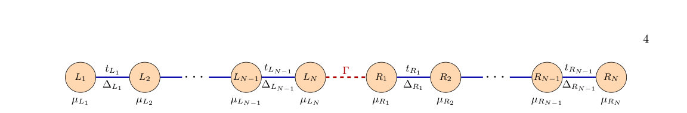
<figcaption class="paper-figure-caption"><b>Fig 1.</b> FIG. 1. Schematic of the double N-site quantum-dot system. Blue bonds denote the intrachain couplings tLi and ∆Li on the left chain and tRi and ∆Ri on the right chain; the dashed red link denotes the interchain tunnel coupling Γ.</figcaption>
</figure>
<figure class="paper-figure-card">
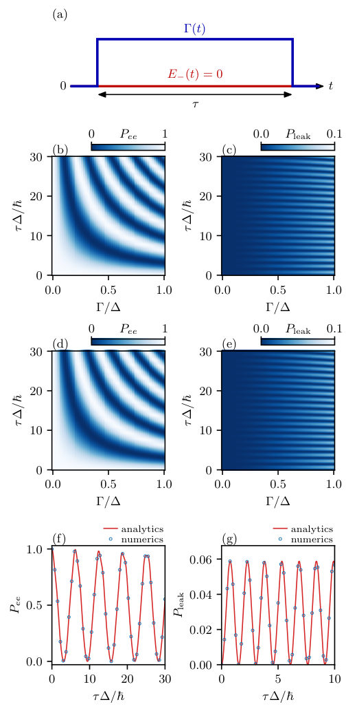
<figcaption class="paper-figure-caption"><b>Fig 2.</b> FIG. 2. Rabi oscillations in the pristine limit. (a) Pulse pro- file; (b,c) Pee and Pleak after the pulse versus Γ/∆and τ∆/ℏ for N = 2; (d,e) the same for N = 3; (f,g) line cuts of (d,e) at Γ/∆= 1, with circles being numerical results, and lines being analytical results in Eqs. (17) and (18).</figcaption>
</figure>
<figure class="paper-figure-card">
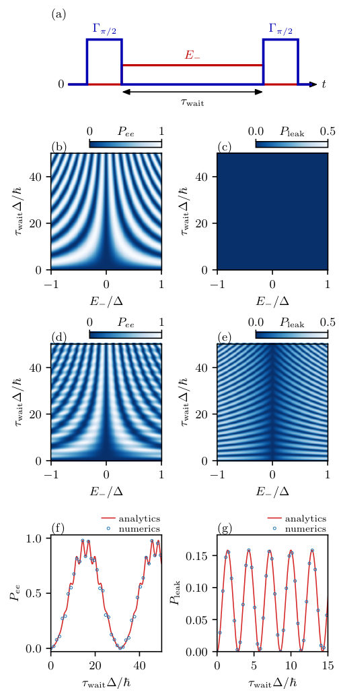
<figcaption class="paper-figure-caption"><b>Fig 3.</b> FIG. 3. Ramsey oscillations in the pristine limit. (a) Pulse sequence: two π/2 pulses of amplitude Γπ/2 and duration τπ/2 enclose the free evolution of duration τwait at the detun- ing Eqs. (19) and (20)-(21) for N = 2 and N = 3, respec- tively; (b,c) Pee and Pleak after the sequence versus E−/∆ and τwait∆/ℏfor N = 2; (d,e) the same for N = 3; (f,g) line cuts of (d,e) at E−/∆= 0.2 with circles being numerical re- sults, and lines being analytical results in Eqs. (23) and (22). Here, Γπ/2 = 0.2∆;</figcaption>
</figure>
<figure class="paper-figure-card">
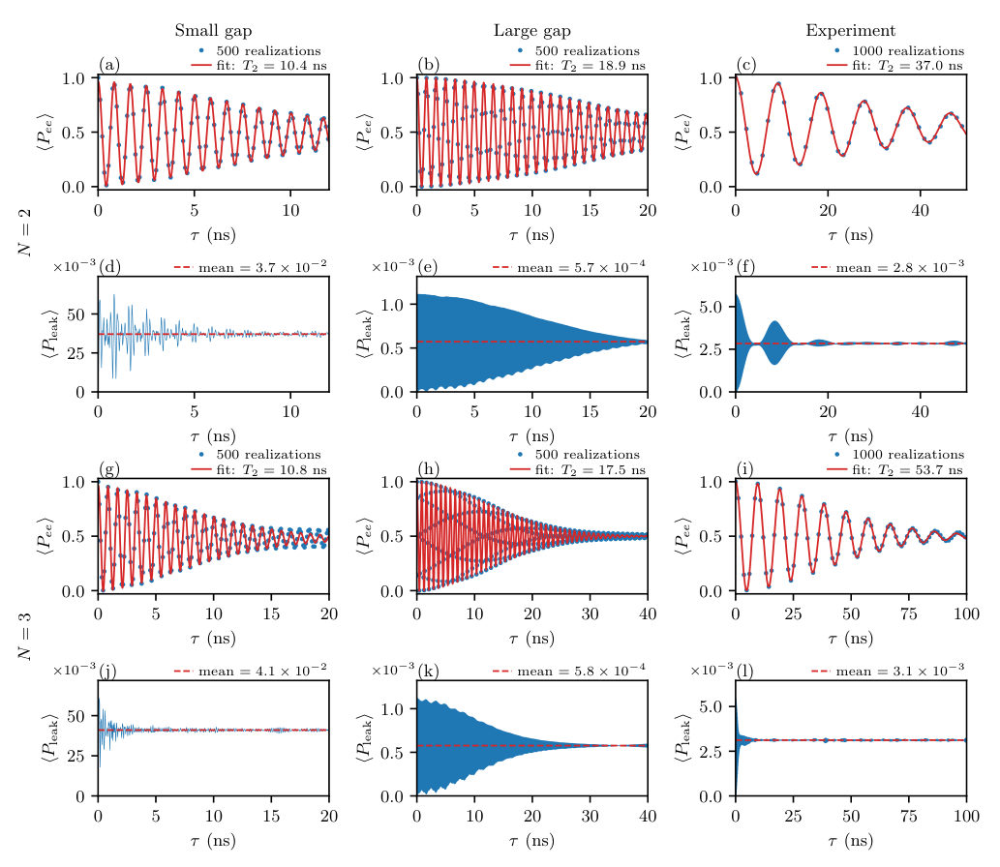
<figcaption class="paper-figure-caption"><b>Fig 4.</b> FIG. 4. Rabi oscillation with disorder. The first two rows are for Pee and Pleak for N = 2, and the last two rows are the corresponding values for N = 3. The first column is for small gap parameters, the second column is for large gap parameters, and the third column is for experimental parameters. The parameters are listed in Table I.</figcaption>
</figure>
<figure class="paper-figure-card">
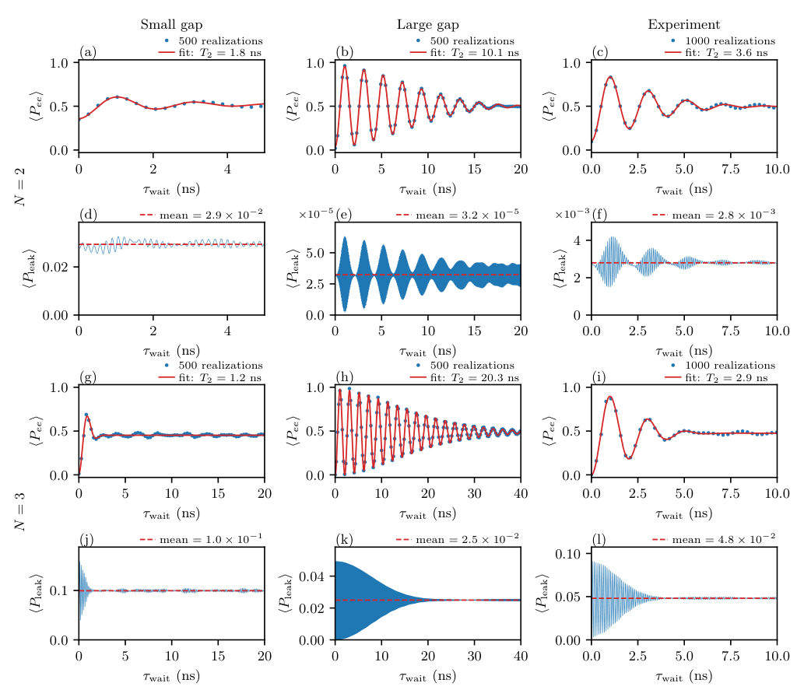
<figcaption class="paper-figure-caption"><b>Fig 5.</b> FIG. 5. Ramsey oscillation with disorder. The first two rows are for Pee and Pleak for N = 2, and the last two rows are the corresponding values for N = 3. The first column is for small gap parameters, the second column is for large gap parameters, and the third column is for experimental parameters. The parameters are listed in Table I.</figcaption>
</figure>
</div>

<p><strong>Summary.</strong> This theoretical study analyzes the coherence scaling of Majorana qubits built on quantum dot chains by examining Rabi and Ramsey oscillations for varying chain lengths. The authors find that while longer chains might improve quantum memory, the coherence time for qubit manipulation is not universally enhanced by increasing the number of dots due to complex disorder-induced leakage channels. The results highlight that coherence performance is critically dependent on precise parameter tuning rather than just system size.</p>
<p><strong>Why it may be interesting.</strong> This work directly addresses the fundamental challenge of scaling quantum hardware: demonstrating that increasing physical size (more dots) translates into improved coherence for practical quantum computation protocols.</p>
<details>
<summary>Detailed structure</summary>
<p><strong>Main problem.</strong> The study investigates how the coherence time (Rabi and Ramsey) of Majorana-based qubits scales as the number of quantum dots ($N$) increases in artificial Kitaev chains.</p>
<p><strong>Main result.</strong> Increasing the chain length ($N$) does not guarantee better qubit performance; while longer chains might be better for quantum memory, the coherence enhancement is highly sensitive to disorder and specific manipulation protocols.</p>
<p><strong>Method.</strong> The authors employ theoretical modeling, deriving effective Hamiltonians and calculating coherence decay rates by analyzing leakage channels in both the pristine and disordered limits.</p>
<p><strong>Model / system.</strong> The system is a double $N$-site quantum-dot artificial Kitaev chain, designed to host Majorana zero modes. The physics is governed by a generalized Hamiltonian incorporating site energies, tunneling terms, and disorder.</p>
<p><strong>Key observables.</strong> Rabi coherence time ($T_{2,	ext{Rabi}}$) and Ramsey coherence time ($T_{2,	ext{Ramsey}}$) oscillations, and the associated leakage probabilities ($P_{	ext{leak}}$).</p>
<p><strong>Important parameters / regimes.</strong> Chain length ($N$), superconducting gaps, detuning ($\epsilon$), and the strength of disorder fluctuations.</p>
<p><strong>Assumptions / limitations.</strong> The analysis compares results for pristine limits versus realistic disorder, and the derivation of dephasing envelopes relies on Gaussian disorder assumptions.</p>
<p><strong>Figures summary.</strong> Figures illustrate Rabi and Ramsey oscillations for $N=2$ and $N=3$ qubits in the pristine limit, comparing numerical and analytical results, and showing leakage probabilities.</p>
<p><strong>Paper structure.</strong> The paper progresses from defining the physical system and Hamiltonian, deriving the effective $2	imes 2$ block Hamiltonians for parity sectors, calculating the decay mechanisms for Rabi and Ramsey sequences, and finally analyzing the scaling effects of disorder.</p>
</details>
<details>
<summary>Abstract</summary>
<p>We present a theoretical study of the Rabi and Ramsey coherence time of Majorana-based qubits formed by double $N$-site quantum-dot artificial Kitaev chains, following the recent experimental realization arXiv:2607.09511. We generalize the qubit to two chains of arbitrary length and compare the Rabi and Ramsey oscillations of the four-dot and six-dot qubits, simulated with realistic disorder for three sets of parameters: small and large superconducting gaps, and the experimental parameters. We find that, in the pristine limit, the Rabi oscillation is independent of the chain length, whereas the Ramsey oscillation of the six-dot qubit suffers from larger leakage, because the third site suppresses the unwanted energy splitting away from the sweet spot but at the same time makes the deliberate splitting difficult to achieve, which requires a larger detuning that could excite the bulk. In reality with disorder, neither coherence time improves universally with the chain length. The Rabi coherence is set by the competition of three dephasing channels, and the additional dots pay off only if the fluctuation of the interchain tunneling is suppressed; the Ramsey coherence is set by the fluctuation of the energy splitting during the $σ_z$ rotation, which for the four-dot qubit is fixed by the sweet-spot disorder alone and does not depend on the mean splitting, whereas for the six-dot qubit the detuning that generates the splitting adds a fluctuation growing with the splitting itself, so the additional dots pay off only for small splittings. This implies that a longer chain is thus a better quantum memory but not necessarily a better qubit under manipulation. Although topological protection is expected in a longer Kitaev chain qubit, observing it in the current Rabi and Ramsey measurement protocols remains an experimental challenge.</p>
</details>
<p><sub><a href="#top">↑ back to top</a></sub></p>

<p><a id="paper-2609.26400"></a></p>
<h3 id="routes-to-chaos-in-a-mass-conserving-two-species-reaction-diffusion-model"><a href="http://arxiv.org/abs/2609.26400v1">Routes to chaos in a mass-conserving two-species reaction-diffusion model</a></h3>
<p><strong>Authors:</strong> Simón Navia Rafide, Uwe Thiele<br>
<strong>Type:</strong> theory · <strong>Category:</strong> statistical mechanics · <strong>PDF:</strong> <a href="https://arxiv.org/pdf/2609.26400v1">https://arxiv.org/pdf/2609.26400v1</a><br>
<strong>Analysis basis:</strong> full PDF text, analyzed in chunks
<strong>Topic relevance:</strong> <code>analog quantum simulation</code> <strong>3/5</strong> · <code>Frenkel-Kontorova</code> <strong>1/5</strong> · <code>correlated / nonlocal dissipation</code> <strong>1/5</strong> · <code>driven-dissipative phase transition</code> <strong>1/5</strong> · <code>non-equilibrium universality</code> <strong>1/5</strong></p>
<div class="figure-strip-hint">↔ Scroll figures horizontally</div>
<div class="paper-figures-scroll">
<figure class="paper-figure-card">
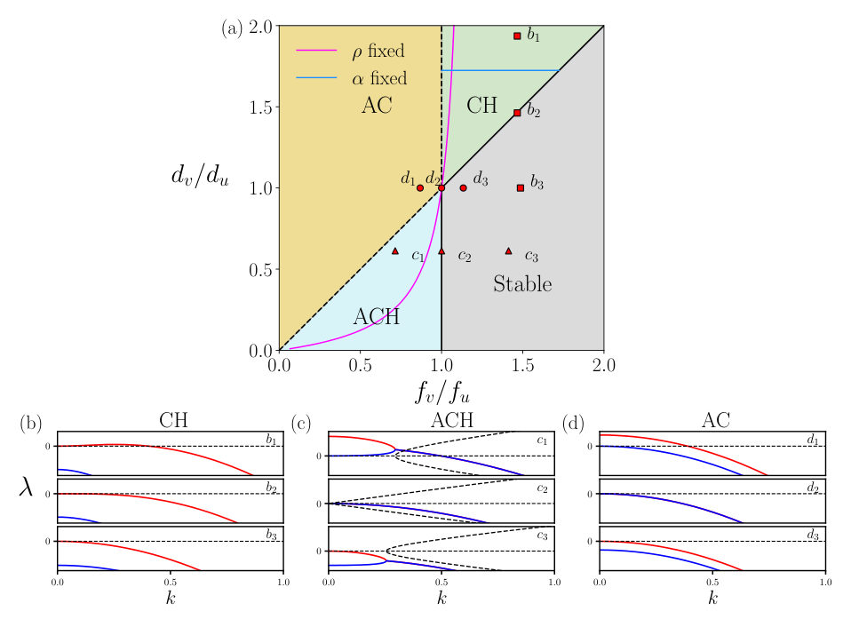
<figcaption class="paper-figure-caption"><b>Fig 1.</b> FIG. 1. Types of linear instabilities in a two-species reaction-diffusion system with mass conservation. (a) Stability behavior in the (𝑑𝑣/𝑑𝑢, 𝑓𝑣/ 𝑓𝑢)-plane depicted for the case 𝑓𝑢&gt; 0. Square, triangle and circle symbols indicate parameters of the dispersion relations in panels (b), (c) and (d), respectively. For the specific considered 𝑓(𝑢, 𝑣) [Eq. (4)] the magenta line indicates the path parametrized by 𝛼∈(1/2, 100] at fixed 𝜌= 0.6 excluding 𝛼= 1.0, since it is a forbidden value, see (7). The cyan curve indicates the path parametrized by 𝜌∈(0, 50] at fixed 𝛼= 0.58. (b) Cahn-Hilliard (CH) (c) Allen-Cahn-Hopf (ACH) (d) Cahn-Hilliard (CH). In each case, the eigenvalues 𝜆+ (red) and 𝜆−(blue)...</figcaption>
</figure>
<figure class="paper-figure-card">
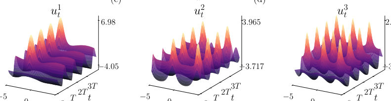
<figcaption class="paper-figure-caption"><b>Fig 2.</b> FIG. 2. (a) Bifurcation diagram of the system (1) as a function of 𝑑𝑢at ¯𝜌= 0.6 using the spatio-temporal maximum 𝑢max [see Eq. (8)] as solution measure (for steady states it simplifies to max 𝑥 𝑢(𝑥)). Solid (dashed) lines indicate linearly stable (unstable) states. The purple line represents the uniform steady state given by Eq. (7) that is linearly stable at large 𝑑𝑢and becomes increasingly unstable via a series of supercritical pitchfork bifurcations BP𝑛(circles). The various cyan lines represent heterogeneous steady states with 𝑘𝑛= 2𝜋𝑛/𝐿and 𝑛= 1, 2, ..., respectively. The orange lines represent branches of time-periodic states (standing waves) connecting secondary Hopf bifurcations H+...</figcaption>
</figure>
<figure class="paper-figure-card">
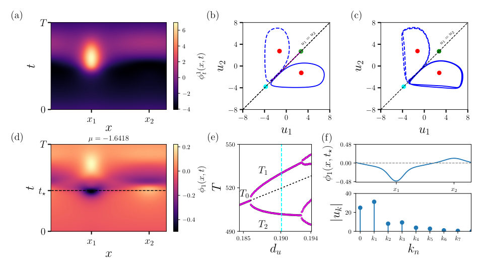
<figcaption class="paper-figure-caption"><b>Fig 3.</b> FIG. 3. (a), (d) Respective space-time plots at 𝑑𝑢= 0.19 of the 𝑛= 1 time-periodic standing-wave state 𝝓1 𝑡(𝑥, 𝑡) and of the corrsponding perturbation 𝜙1(𝑥, 𝑡) associated with the period doubling bifurcation PD1. (b), (c) Trajectories are given in phase planes spanned by values of 𝑢(𝑥, 𝑡) at the two fixed positions 𝑥1 and 𝑥2, which correspond to the occurring peak position and its spatial reflection (𝑥→−𝑥). Filled circles correspond to steady states (red) and to the extremal values of 𝑢(𝑥, 𝑡) in one period of 𝝓2 𝑡(𝑥, 𝑡) (green and cyan). In (b) blue solid and dashed lines correspond to the cyclic trajectory of the unstable state in panel (a) and its spatial reflection, respectively. Panel...</figcaption>
</figure>
<figure class="paper-figure-card">
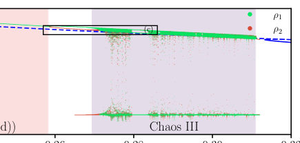
<figcaption class="paper-figure-caption"><b>Fig 4.</b> Fig.6(d)</figcaption>
</figure>
<figure class="paper-figure-card">

<figcaption class="paper-figure-caption"><b>Fig 5.</b> Fig.6(e)</figcaption>
</figure>
</div>

<p><strong>Summary.</strong> This paper analyzes the complex dynamics of a mass-conserving two-species reaction-diffusion model, showing how pattern formation is governed by specific instabilities like the Cahn-Hilliard and Allen-Cahn-Hopf types. Through numerical simulation and stability analysis, the authors demonstrate that even simple systems can exhibit rich spatiotemporal chaos due to nonlinear interactions.</p>
<p><strong>Why it may be interesting.</strong> While focused on classical reaction-diffusion dynamics, the study of pattern formation, symmetry breaking, and the transition to chaos in non-equilibrium systems is highly relevant to understanding complex dynamics in many-body quantum systems or open quantum systems.</p>
<details>
<summary>Detailed structure</summary>
<p><strong>Main problem.</strong> The paper investigates the complex routes to chaos and pattern formation in a mass-conserving two-species reaction-diffusion system.</p>
<p><strong>Main result.</strong> The system can exhibit rich spatiotemporal behavior, including period-doubling cascades and low-dimensional spatiotemporal chaos, even when primary bifurcations are restricted to the Cahn-Hilliard type.</p>
<p><strong>Method.</strong> The analysis combines linear stability analysis (identifying Cahn-Hilliard and Allen-Cahn-Hopf instabilities) with numerical continuation and direct time simulations to map out bifurcation structures.</p>
<p><strong>Model / system.</strong> The model is a mass-conserving reaction-diffusion system for two species, governed by coupled partial differential equations with a specific reaction term $f(u, v)$. Mass conservation ($\partial 
ho / \partial t = 
abla^2 \eta$) is a defining feature.</p>
<p><strong>Key observables.</strong> Order parameter $M(t)$, Normalized Peak Asymmetry ($\Phi$), Normalized Flip Ratio ($\mathcal{F}$), and the identification of different instability types (CH, ACH).</p>
<p><strong>Important parameters / regimes.</strong> Diffusion constants ($d_u, d_v$), reaction constants ($a_1, a_2, \alpha$), and the total mean density $ar{
ho}$.</p>
<p><strong>Assumptions / limitations.</strong> The analysis focuses on the case where only a Cahn-Hilliard instability can occur (all primary bifurcations are stationary), and the system is restricted to two species with one conservation law.</p>
<p><strong>Figures summary.</strong> Stability diagrams map out the conditions for instability based on system invariants, showing regions for Cahn-Hilliard and Allen-Cahn-Hopf instabilities.</p>
<p><strong>Paper structure.</strong> The paper revisits the system by first analyzing linear stability to identify potential instabilities (CH, ACH). It then investigates the nonlinear dynamics, focusing on the case where only CH instabilities occur, leading to the study of secondary bifurcations and the emergence of chaos.</p>
</details>
<details>
<summary>Abstract</summary>
<p>Mass-conserving reaction-diffusion systems with two species correspond to a seemingly simple case where pattern formation occurs under the influence of a conservation law. Here, we first revisit their linear stability behavior and point out that generically two instabilities can occur: a stationary large-scale mass-conserving (Cahn-Hilliard) instability and an instability that combines features of a stationary large-scale non-mass-conserving (Allen-Cahn) instability and a oscillatory large-scale mass-conserving (conserved-Hopf) instability. We term it an Allen-Cahn-Hopf instability. Second, we investigate the nonlinear dynamics for a specific model related to the formation of cell polarization where only a Cahn-Hilliard instability can occur, i.e., all primary bifurcations are stationary. We analyze how secondary and further bifurcations subsequently give rise to various oscillatory states. The emerging rich spectrum of spatiotemporal behavior includes several period-doubling cascades related to different forms of spatial and temporal symmetry breaking. Beside regular states, three types of low-dimensional spatiotemporal chaos occur and involve transitions like fusion and an outer crises. Our results demonstrate the importance of nonlinear interactions in the dynamics of mass-conserving reaction-diffusion systems, and show that even a simple two-species system with primary bifurcations of Cahn-Hilliard type can show complex spatiotemporal behavior.</p>
</details>
<p><sub><a href="#top">↑ back to top</a></sub></p>

<p><a id="paper-2609.26722"></a></p>
<h3 id="the-role-of-electron-correlations-in-chirality-induced-spin-selectivity-of-molecular-junctions"><a href="http://arxiv.org/abs/2609.26722v1">The Role of Electron Correlations in Chirality Induced Spin Selectivity of Molecular Junctions</a></h3>
<p><strong>Authors:</strong> A. Konidena, J. Fransson, L. Kantorovich<br>
<strong>Type:</strong> theory · <strong>Category:</strong> strongly correlated electrons · <strong>PDF:</strong> <a href="https://arxiv.org/pdf/2609.26722v1">https://arxiv.org/pdf/2609.26722v1</a><br>
<strong>Analysis basis:</strong> full PDF text, analyzed in chunks
<strong>Topic relevance:</strong> <code>Keldysh / 2PI / non-Gaussian methods</code> <strong>3/5</strong> · <code>methods for driven-dissipative</code> <strong>3/5</strong> · <code>analog quantum simulation</code> <strong>1/5</strong></p>
<div class="figure-strip-hint">↔ Scroll figures horizontally</div>
<div class="paper-figures-scroll">
<figure class="paper-figure-card">
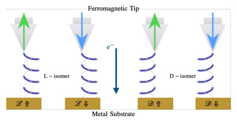
<figcaption class="paper-figure-caption"><b>Fig 1.</b> Figure 1. There are four possibilities to measure the current through a ferromagnetic tip attached to a chiral molecule on a metal substrate: L -isomer with either up- (green arrow, ⇑) or down-polarised (blue arrow, ⇓) tip, and D-isomer of the chiral molecule with both polarisations of the tip, ⇑and ⇓. In all four cases the chemical potential is chosen such that electrons transmit from the tip to the surface as indicated.</figcaption>
</figure>
<figure class="paper-figure-card">
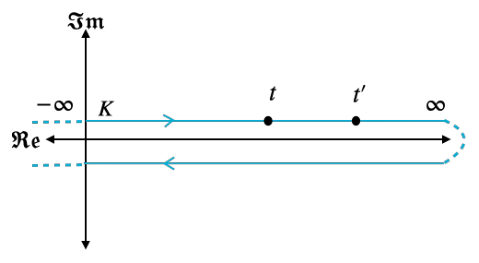
<figcaption class="paper-figure-caption"><b>Fig 2.</b> Figure 3. In a steady state we employ the Keldysh contour, K, which extends from negative infinity to positive infinity, then curves back around to negative infinity.</figcaption>
</figure>
<figure class="paper-figure-card">
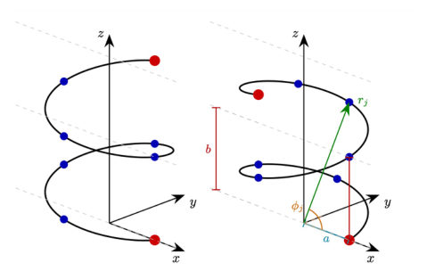
<figcaption class="paper-figure-caption"><b>Fig 3.</b> Figure 2. Left-handed (L ) and right handed (D) helices used in our simulations containing 2 turns and 4 atomic sites per turn (8 sites in total). The helix has radius, a, pitch, b, and intersite angle, ϕ, see Eq. (3). The red edge atoms are the ones attached to the leads on either end of the helix, where site 1 is attached to the tip and site 8 is attached to the substrate (a normal metal).</figcaption>
</figure>
<figure class="paper-figure-card">
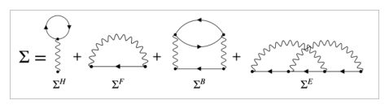
<figcaption class="paper-figure-caption"><b>Fig 4.</b> Figure 4. The four diagrams that contribute to SCF calcu- lations in the SBA.</figcaption>
</figure>
<figure class="paper-figure-card">
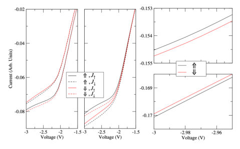
<figcaption class="paper-figure-caption"><b>Fig 5.</b> Figure 6. Spin resolved currents  J↑/↓  and the total cur- rents as functions of the voltage for U/t = 2, calculated in the second order of perturbation theory for the self-energy. Left and middle panels: spin-resolved currents for D heli- city with the tip polarised up (⇑) and down (⇓). In the left panel (regime A): ΓL ↑↑= 0.6 and ΓL ↓↓= ΓR = 0.4, while in the middle panel (regime B): ΓL ↑↑= 1.5 and ΓL ↓↓= ΓR = 1.0. Two right panels: the total currents for both regimes and both tip polarisations. The following parameters were used: ε = 2.0, t = −0.4, λ = 0.05 and U = 0.8.</figcaption>
</figure>
</div>

<p><strong>Summary.</strong> This theoretical study investigates whether electron-electron correlations are the primary cause of the Chirality Induced Spin Selectivity (CISS) effect in molecular junctions. Using the NEGF method with Hubbard atoms, the authors found that while correlations are important, they alone cannot account for the large spin polarization factors seen in experiments. The results suggest that other mechanisms, beyond simple correlation effects, must be at play.</p>
<p><strong>Why it may be interesting.</strong> This work directly addresses spin transport in nanoscale systems using advanced many-body techniques (NEGF, SBA), which is highly relevant to open quantum systems and molecular spintronics.</p>
<details>
<summary>Detailed structure</summary>
<p><strong>Main problem.</strong> The study aims to determine the specific role of electronic correlation effects in explaining the Chirality Induced Spin Selectivity (CISS) effect in molecular junctions.</p>
<p><strong>Main result.</strong> The calculations found very little spin polarization, suggesting that while electron-electron interactions are important for spin selectivity, they cannot be solely responsible for the high polarization factors observed experimentally.</p>
<p><strong>Method.</strong> The Non-Equilibrium Green's Function (NEGF) approach is employed, treating correlation effects using the self-consistent second Born approximation.</p>
<p><strong>Model / system.</strong> The physical system modeled is a chain of Hubbard atoms arranged in a helical geometry, sandwiched between two leads, one of which is magnetic.</p>
<p><strong>Key observables.</strong> Spin polarization (SP) factor, total currents for different spin directions, and the distribution of spin populations on the chain atoms.</p>
<p><strong>Important parameters / regimes.</strong> The ratio of the Hubbard constant to the hopping parameter ($U/t$), and the strength of spin-orbit coupling (SOC).</p>
<p><strong>Assumptions / limitations.</strong> The interaction with the leads is treated within the Wide Band Approximation, and correlation effects are systematically included up to the second Born approximation.</p>
<p><strong>Figures summary.</strong> Not specified.</p>
<p><strong>Paper structure.</strong> The paper systematically applies the NEGF formalism to model spin transport through a chiral molecular junction, comparing results for L and D enantiomers while varying the correlation strength ($U/t$).</p>
</details>
<details>
<summary>Abstract</summary>
<p>The Non-Equilibrium Green's Function (NEGF) approach is applied to a chain of Hubbard atoms in a helical geometry sandwiched between two leads, one of which is magnetic, to assess what role the electronic correlation effects within the molecule may play in explaining the Chirality Induced Spin Selectivity (CISS) effect. The correlation effects are treated at the level of the self-consistent second Born approximation. Two chiralities, Laevorotatory (L) and Dextrorotatory (D), of the helix, are discussed. Further, we account for spin-orbit coupling (SOC) within the chains using a simplified model of Kane and Mele that exploits next-nearest neighbour interactions intrinsic to a curved geometry. The interaction with the leads is considered within the Wide Band Approximation. We consider the ratio, U/t, of the Hubbard constant U to the hopping t between atomic sites along the chain of up to two, but found very little spin polarisation in our calculations. Even though the spin polarisation factor defined as a relative difference between the largest and smallest total current is found for both enantiomers practically the same, the orientation of the tip's polarisation required to reach the largest and smallest currents for the two enantiomers differed. It is also found that the qualitative agreement with observations can only be achieved if we account, self-consistently, for the second order of the perturbation theory. The distribution of the spin populations on the chain atoms for different U/t ratios is also discussed. This study concludes that even though accounting for electron-electron interactions are important in understanding spin selectivity within molecular junctions, they cannot be made solely responsible for the high spin polarisation factors observed in experiments.</p>
</details>
<p><sub><a href="#top">↑ back to top</a></sub></p>

<p><a id="paper-2609.26661"></a></p>
<h3 id="autonomous-quantum-transport-measurements-of-2d-semiconductors-by-an-ai-agent"><a href="http://arxiv.org/abs/2609.26661v1">Autonomous Quantum Transport Measurements of 2D Semiconductors by an AI Agent</a></h3>
<p><strong>Authors:</strong> Brandon Bauer, Matthew Whalen, Kenji Watanabe, Takashi Taniguchi, John Q. Xiao, Tao E. Li, Wenjin Zhao<br>
<strong>Type:</strong> experiment · <strong>Category:</strong> other · <strong>PDF:</strong> <a href="https://arxiv.org/pdf/2609.26661v1">https://arxiv.org/pdf/2609.26661v1</a><br>
<strong>Analysis basis:</strong> full PDF text, analyzed in chunks
<strong>Topic relevance:</strong> <code>quantum measurements</code> <strong>3/5</strong></p>
<div class="figure-strip-hint">↔ Scroll figures horizontally</div>
<div class="paper-figures-scroll">
<figure class="paper-figure-card">
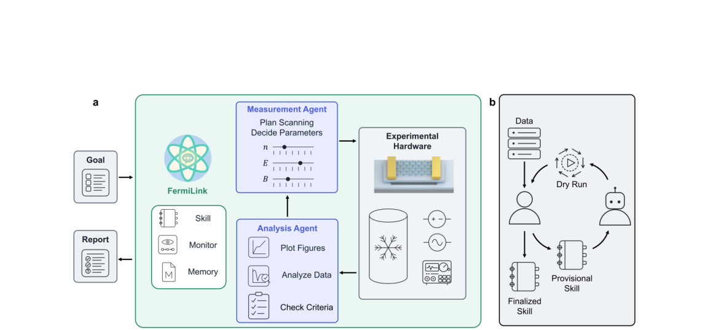
<figcaption class="paper-figure-caption"><b>Fig 1.</b> Figure 1. Autonomous experimentation framework. a, End-to-end agent operation. Given a user-supplied brief instruction, the FermiLink agent harness launches a measurement agent that plans the scan and decides the parameters (e.g., carrier density n, electric field E, and magnetic field B), followed by submitting the measurement to the experimental hardware through a parser- controlled acquisition interface. When the measurement finishes, an analysis agent post-processes the data and decides whether to proceed to the next step or skip to the final step based on the acceptance criteria. The measurement-analysis loop repeats until all sub-questions predefined in Agent Skills are answered and a...</figcaption>
</figure>
<figure class="paper-figure-card">
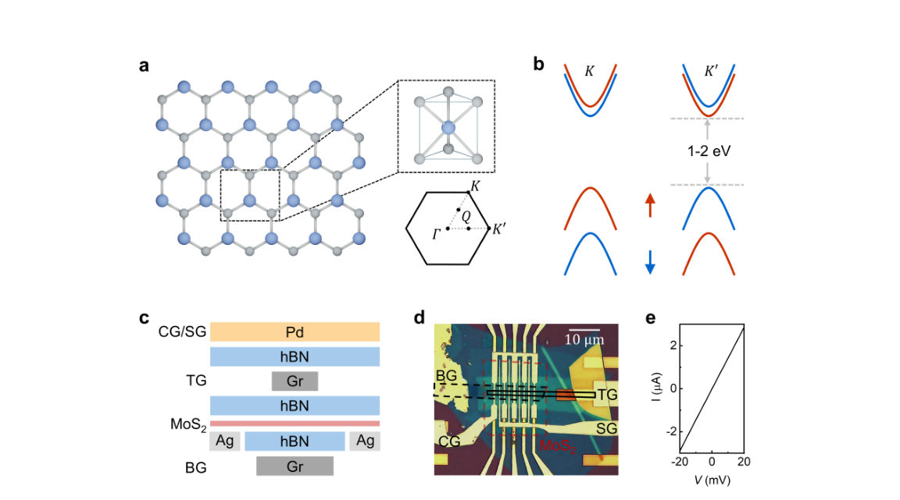
<figcaption class="paper-figure-caption"><b>Fig 2.</b> Fig. 2 | MoS₂ devices and electronic structure. a, Top view of the TMD lattice, with the transition metal (blue) and chalcogen (grey) sublattices. Right inset: the hexagonal Brillouin zone, indicating the Γ, K, and K′ points and the Q valleys. b, Schematic band structure at the K and K′ valleys of monolayer MoS₂. Red and blue denote spin-up and spin-down bands. c, Schematic cross-section of the dual-gated Hall bar device. The MoS₂ channel (red) is encapsulated in hBN, with graphite top (TG) and bottom (BG) gates, Pd contact/split gates (CG/SG), and Ag electrodes. d, Optical image of the device, with the MoS₂ flake outlined in red and the gate electrodes labeled as in c. Scale bar, 10 μm. e,...</figcaption>
</figure>
<figure class="paper-figure-card">
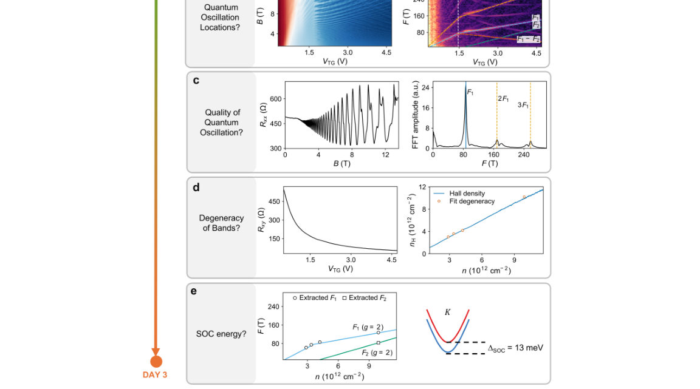
<figcaption class="paper-figure-caption"><b>Fig 3.</b> Figure 3. Autonomous monolayer MoS₂ campaign. Each row is one round of the experiment loop, labeled by the sub-question the agent set out to answer. The left figures present the raw data, and the right figures show the agent analysis. a, 𝑅!! as a function of 𝑉&quot;# at 𝐵= 0. The turn-on voltage 𝑉&quot;#_-. = 0.43 V is marked by the black dotted line. b, 𝑅!! as a function of 𝑉&quot;# and 𝐵 (left)</figcaption>
</figure>
<figure class="paper-figure-card">
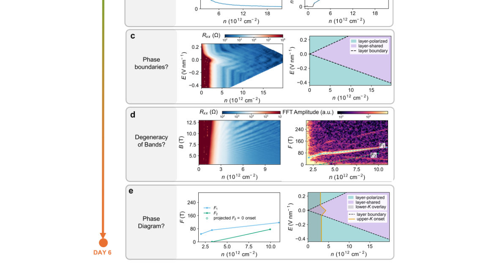
<figcaption class="paper-figure-caption"><b>Fig 4.</b> Fig. 4. Autonomous bilayer MoS₂ campaign. Each row is one round of the experiment loop, labeled by the sub-question the agent set out to answer. a, 𝑅!! as a function of 𝑉&quot;# and 𝑉*# (left) and 𝑛 and 𝐸 (right). b, 𝑅!+ at 𝐵= 6 T (left) and Hall density 𝑛/ (right) versus 𝑛. The fit window</figcaption>
</figure>
</div>

<p><strong>Summary.</strong> This paper introduces an AI-driven framework that automates the entire process of quantum transport measurements on 2D semiconductors like $   ext{MoS}_2$. By autonomously planning, executing, and analyzing multi-day experiments, the agent successfully characterized fundamental properties, such as spin-orbit coupling and layer-resolved phase diagrams, demonstrating a significant step toward self-driving laboratories.</p>
<p><strong>Why it may be interesting.</strong> While the physics is condensed matter, the core contribution is the methodology—using advanced AI agents to automate complex, multi-day experimental procedures, which is a major development in experimental physics infrastructure.</p>
<details>
<summary>Detailed structure</summary>
<p><strong>Main problem.</strong> The paper addresses the need to automate complex, multi-step, multi-day quantum transport measurements in 2D semiconductors to accelerate scientific discovery.</p>
<p><strong>Main result.</strong> The AI agent successfully performed end-to-end measurements, determining the conduction-band spin-orbit coupling energy in monolayer $ ext{MoS}_2$ and mapping the layer- and valley-resolved phase diagram in bilayer $   ext{MoS}_2$.</p>
<p><strong>Method.</strong> An AI-driven, hypothesis-guided workflow implemented via the FermiLink agent harness, which autonomously plans, executes, analyzes, and reports on cryogenic quantum transport measurements.</p>
<p><strong>Model / system.</strong> The experiments are conducted on two-dimensional (2D) semiconductors, specifically $    ext{MoS}_2$ (monolayer and bilayer), utilizing a dual-gated Hall bar device structure encapsulated in hBN.</p>
<p><strong>Key observables.</strong> Conduction-band spin–orbit coupling (SOC) energy, layer- and valley-resolved phase diagrams, quantum oscillation frequencies derived from FFT analysis, and Hall resistance ($R_{xx}, R_{xy}$).</p>
<p><strong>Important parameters / regimes.</strong> Gate voltages ($V_{	ext{g}}$), magnetic fields ($B$), and carrier densities ($n$).</p>
<p><strong>Assumptions / limitations.</strong> The framework relies on the stability of the AI agent harness and requires human experts to define robust 'Agent Skills' through iterative dry runs for new device types.</p>
<p><strong>Figures summary.</strong> Figures illustrate the multi-step workflow, device setups, and results showing Landau fan measurements, $R_{xx}$ vs. gate voltage maps, and the final phase diagrams detailing layer and valley occupations.</p>
<p><strong>Paper structure.</strong> The paper details the architecture of the AI workflow (planning $
ightarrow$ measurement $
ightarrow$ analysis $
ightarrow$ reporting), applies this workflow to $   ext{MoS}_2$ to extract SOC energy, and then extends it to map the complex phase diagram of bilayer $    ext{MoS}_2$.</p>
</details>
<details>
<summary>Abstract</summary>
<p>Artificial-intelligence (AI) agents are beginning to enter experimental laboratories, automating experiments and accelerating scientific discovery. Herein, we introduce an AI-driven workflow in which an AI agent performs multi-step, multi-day quantum transport measurements end-to-end. Specifically, given brief instructions, the agent starts by planning the multi-step measurements, then safely operates the cryogenic instruments, analyzes the data, and concludes with a final report. We demonstrate this AI workflow on multiple monolayer and bilayer MoS2 devices. Through autonomous measurement campaigns lasting up to six days, the agent determined the conduction-band spin-orbit coupling energy in monolayer MoS2, and mapped a layer- and valley-resolved phase diagram in bilayer MoS2. This experimental workflow is implemented through the FermiLink agent harness, which emphasizes instrumental safety and the reliability of the measurement and analysis. The framework is general and can be readily adapted to other types of experiments, representing a step toward self-driving laboratories.</p>
</details>
<p><sub><a href="#top">↑ back to top</a></sub></p>

<p><a id="paper-2609.25426"></a></p>
<h3 id="ultrafast-dissipative-localization-of-electronic-energy-in-aupt-superlattices"><a href="http://arxiv.org/abs/2609.25426v1">Ultrafast Dissipative Localization of Electronic Energy in AuPt Superlattices</a></h3>
<p><strong>Authors:</strong> C. Walz, M. Mattern, J. -E. Pudell, J. Jarecki, L. Mehner, F. -C. Weber, F. Baltrusch, S. P. Zeuschner, M. Herzog, B. Ahn, J. C. Ekström, D. Kroon, A. Jurgilaitis, J. Larsson, M. Kronseder, D. Schick, A. von Reppert, M. Bargheer<br>
<strong>Type:</strong> both · <strong>Category:</strong> statistical mechanics · <strong>PDF:</strong> <a href="https://arxiv.org/pdf/2609.25426v1">https://arxiv.org/pdf/2609.25426v1</a><br>
<strong>Analysis basis:</strong> full PDF text, analyzed in chunks
<strong>Topic relevance:</strong> <code>methods for driven-dissipative</code> <strong>2/5</strong> · <code>Keldysh / 2PI / non-Gaussian methods</code> <strong>1/5</strong> · <code>correlated / nonlocal dissipation</code> <strong>1/5</strong> · <code>driven-dissipative phase transition</code> <strong>1/5</strong> · <code>non-equilibrium universality</code> <strong>1/5</strong> · <code>scars &amp; prethermalization</code> <strong>1/5</strong></p>
<div class="figure-strip-hint">↔ Scroll figures horizontally</div>
<div class="paper-figures-scroll">
<figure class="paper-figure-card">
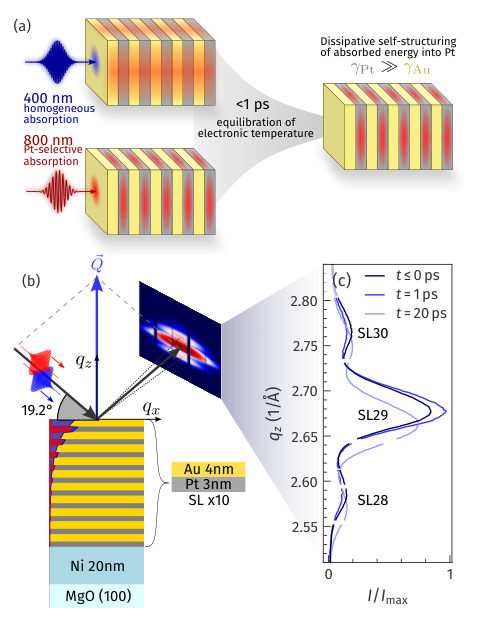
<figcaption class="paper-figure-caption"><b>Fig 1.</b> Figure 1: UXRD experiment probes SL phonon. (a) Visualization of the energy flow within the SL struc- ture following excitation with either 400 nm (homo- geneous) or 800 nm (Pt-selective). Red shaded ar- eas indicate regions with a larger energy density. (b) Schematic of the SL sample and the geometry of the UXRD experiment. The red and blue shaded ar- eas denote the considerably different absorption pro- files for 800 nm and 400 nm, respectively. (c) The diffracted intensity along the out-of-plane reciprocal coordinate qz at three representative delays recorded by an area detector at a fixed diffraction angle in case of 400 nm excitation. Directly after photo-excitation, we observe an...</figcaption>
</figure>
<figure class="paper-figure-card">
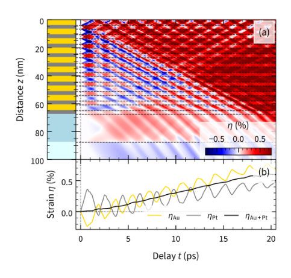
<figcaption class="paper-figure-caption"><b>Fig 2.</b> Figure 3: Modeled strain dynamics within the Au- Pt SL sample. (a) The spatio-temporal strain simu- lation η(t, z) obtained from solving the elastic wave equation shows the opposing strains in Au and Pt as- sociated with the coherent SL phonon mode directly after excitation. On longer timescales, the entire SL structure undergoes a thermal expansion that reaches its maximum at ≈20 ps, when the acoustic phonon wavepacket has propagated through the SL stack at the speed of sound. (b) Averaged strain η(t) within the Au and Pt layers as well as the average strain in the entire SL structure. The oscillating strain con- tributions from Au and Pt cancel each other so that the overall strain,...</figcaption>
</figure>
<figure class="paper-figure-card">
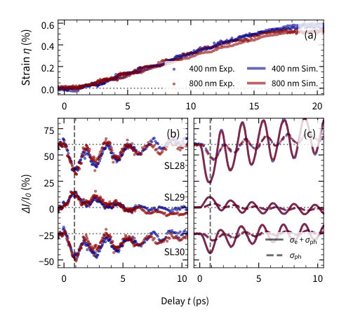
<figcaption class="paper-figure-caption"><b>Fig 3.</b> Figure 2: Laser-induced dynamics of the Au-Pt SL. (a) Average transient strain extracted from the SL Bragg peak shifts, showing the slow expansion of the entire SL structure. The nearly identical max- imum strain at t ≈20 ps demonstrates similar ab- sorbed fluence for 800 and 400 nm excitation. (b) Relative intensity changes of the SL Bragg peaks ex- hibit fast oscillations associated with the 0.57 THz co- herent SL phonon mode. The oscillation amplitudes are nearly identical for both excitation wavelengths. (c) Simulations based on a diffusive two-temperature model (d2TM) and the elastic wave equation repro- duce the observed dynamics. Including the elec- tronic stress contributions is...</figcaption>
</figure>
<figure class="paper-figure-card">
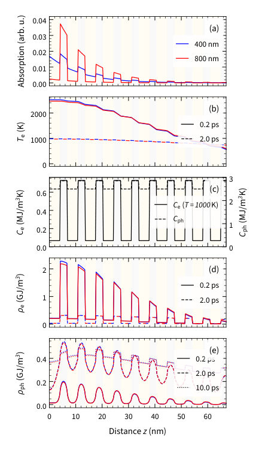
<figcaption class="paper-figure-caption"><b>Fig 4.</b> Figure 4: Mechanism of dissipative self-structuring of laser-deposited energy. (a) Calculated absorption profiles in the Au-Pt SL for 400 and 800 nm excitation based on the wavelength-dependent complex refrac- tive indices of Au and Pt. While 400 nm excitation deposits energy nearly homogeneously across Au and Pt, 800 nm excitation predominantly heats Pt. (b) The electron temperature rapidly equilibrates across the bilayers within the first few hundred femtosec- onds and over the entire SL stack within the first picoseconds. Note that curves for 400 and 800 nm excitation are identical at 2 ps. (c) Spatial modu- lation of the electronic and phononic heat capacities within the SL structure...</figcaption>
</figure>
</div>

<p><strong>Summary.</strong> This work demonstrates that in AuPt superlattices, absorbed optical energy rapidly localizes into Pt due to its high electronic heat capacity, creating an interface stress imbalance. By using ultrafast X-ray diffraction, the authors show that the resulting coherent phonon oscillations are identical regardless of whether the initial energy deposition was homogeneous or selectively absorbed in Pt. This reveals a mechanism for femtosecond control over nanoscale energy distribution.</p>
<p><strong>Why it may be interesting.</strong> The concept of energy self-restructuring on ultrafast timescales, driven by material properties like electronic heat capacity, provides a model for non-equilibrium energy transport relevant to open quantum systems and energy dissipation in nanostructures.</p>
<details>
<summary>Detailed structure</summary>
<p><strong>Main problem.</strong> The central problem is controlling the spatial distribution of absorbed optical energy in nanoscale materials for applications like plasmonics and photothermal chemistry.</p>
<p><strong>Main result.</strong> The energy localization dynamics are governed by ultrafast dissipative equilibration, leading to a final energy landscape independent of the initial optical absorption profile.</p>
<p><strong>Method.</strong> The study combines ultrafast X-ray Diffraction (UXRD) experiments with detailed numerical simulations using a diffusive two-temperature model (d2TM) and linear elastic wave equations.</p>
<p><strong>Model / system.</strong> The system is a metallic AuPt superlattice (SL) composed of alternating Au and Pt layers. The dynamics are modeled by considering electronic heat capacity, electron-phonon coupling, and resulting stress imbalances.</p>
<p><strong>Key observables.</strong> Coherent 570 GHz superlattice phonon amplitude, transient strain ($\eta(t)$), and the comparison of dynamics from 400 nm (homogeneous) vs. 800 nm (Pt-selective) excitation.</p>
<p><strong>Important parameters / regimes.</strong> Ultrafast timescales (femtoseconds to picoseconds), the large electronic heat capacity of Pt, and the superlattice periodicity.</p>
<p><strong>Assumptions / limitations.</strong> The analysis assumes the ability to calibrate for equal total deposited energy between different excitation wavelengths and that UXRD probes total local energy density.</p>
<p><strong>Figures summary.</strong> Figures illustrate the energy flow visualization comparing 400 nm and 800 nm excitation, and show that the measured transient strain and SL phonon dynamics are nearly identical for both excitation sources.</p>
<p><strong>Paper structure.</strong> The paper establishes the need for energy control, presents the AuPt SL system, details the UXRD measurements comparing different excitation wavelengths, and uses simulations to show that the final phonon response is dictated by ultrafast dissipative equilibration rather than initial absorption.</p>
</details>
<details>
<summary>Abstract</summary>
<p>Controlling the spatial distribution of absorbed optical energy is central to nanoscale photothermal chemistry, plasmonics, and ultrafast materials control. Here, we show that a metallic AuPt superlattice concentrates electronic energy in Pt within a few hundred femtoseconds, regardless of the initial energy distribution between the two constituents. Ultrafast X-ray diffraction follows this energy redistribution through the amplitude of a coherent 570 GHz superlattice phonon driven by the stress imbalance at the AuPt interfaces. Despite the nearly homogeneous absorption at 400 nm, the observed lattice motion is identical to that produced by 800 nm excitation, which is absorbed predominantly in Pt. This dissipation driven localization of energy arises from the large electronic heat capacity of Pt and rapid electronic transport through the superlattice, providing a route to femtosecond control of nanoscale energy distributions.</p>
</details>
<p><sub><a href="#top">↑ back to top</a></sub></p>

<p><a id="paper-2609.25406"></a></p>
<h3 id="observation-of-the-magnetic-spin-hall-effect-in-a-ferromagnet"><a href="http://arxiv.org/abs/2609.25406v1">Observation of the magnetic spin Hall effect in a ferromagnet</a></h3>
<p><strong>Authors:</strong> Nicholas Davey-García, Jone Mencos, Luciano Bravo, Inge Groen, Luis E. Hueso, Andreas Berger, Fèlix Casanova<br>
<strong>Type:</strong> experiment · <strong>Category:</strong> other · <strong>PDF:</strong> <a href="https://arxiv.org/pdf/2609.25406v1">https://arxiv.org/pdf/2609.25406v1</a><br>
<strong>Analysis basis:</strong> full PDF text, analyzed in chunks
<strong>Topic relevance:</strong> <code>quantum measurements</code> <strong>2/5</strong> · <code>analog quantum simulation</code> <strong>1/5</strong></p>
<div class="figure-strip-hint">↔ Scroll figures horizontally</div>
<div class="paper-figures-scroll">
<figure class="paper-figure-card">
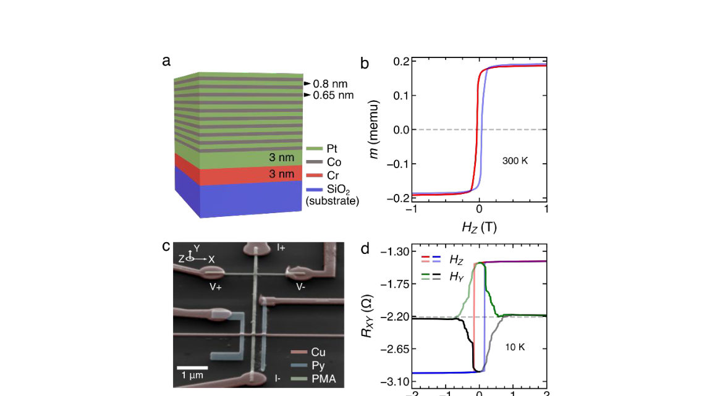
<figcaption class="paper-figure-caption"><b>Fig 1.</b> FIG. 2. Characterization of the ferromagnet with perpendicular magnetic anisotropy. (a) Schematics of the PMA multilayer structure (Co/Pt)n with n = 10 grown on a seed layer (3 nm of Cr and 3 nm of Pt). The PMA properties arise from the subsequent stacking of Pt/Co layers. The thicknesses of each layer have been verified by X-ray reflectometry measurements (see Supp. Info. Fig. S1). (b) Out-of-plane magnetization of the PMA ferromagnet at 300 K measured using SQUID magnetometry. (c) False-colored scanning electron microscope image of the PMA multilayer Hall cross electrode, where the electrical configuration for the AHE measurement is labeled. (d) AHE measured in the PMA Hall cross...</figcaption>
</figure>
<figure class="paper-figure-card">
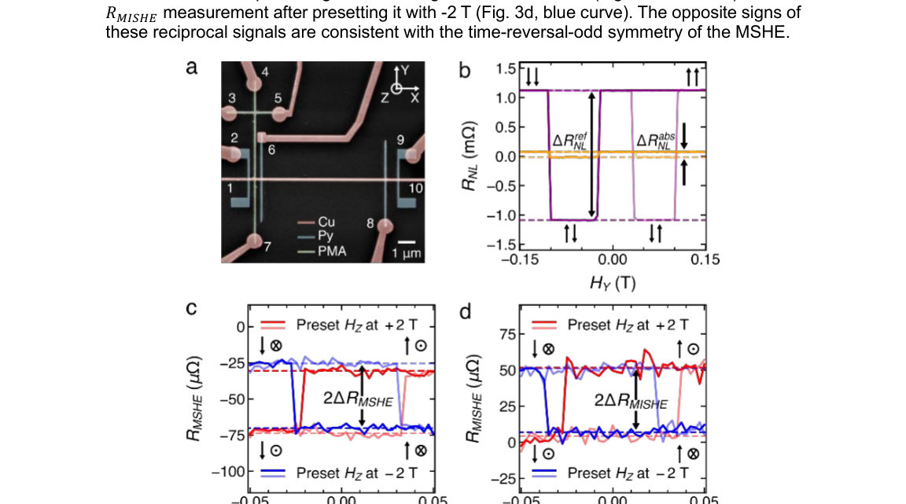
<figcaption class="paper-figure-caption"><b>Fig 2.</b> FIG. 3. Non-local spin signal, MSHE, and MISHE measurements for the lateral spin-valve device at 10 K. (a) False-colored scanning electron microscope image of the LSV device with the intermediate PMA electrode (left) and the reference LSV device (right). (b) Non-local resistance (detected between contacts 8 and 1) for the reference LSV (purple line) in the biasing geometry across the Py/Cu interface (contacts 9 to 10). The magnetic field is applied along the y-direction. The spin signal is denoted as Δ𝑅𝑁𝐿</figcaption>
</figure>
<figure class="paper-figure-card">
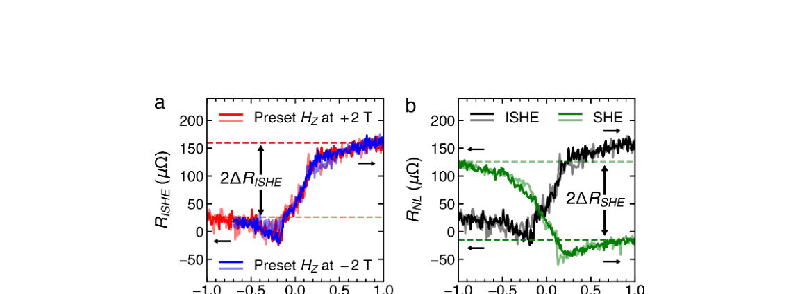
<figcaption class="paper-figure-caption"><b>Fig 3.</b> FIG. 4. SHE and ISHE measurements for the lateral spin-valve at 10 K. (a) ISHE resistance (detected between contacts 4 and 7, defined in Fig. 3a) in the biasing geometry across the Py/Cu interface (contacts 1 to 2). Red (blue) curves correspond to measurements after presetting the PMA magnetization using a magnetic field of +2 T (-2 T). (b) Comparison between the SHE resistance (green lines), detected between contacts 4 and 7 in the biasing geometry across the Py/Cu interface (contacts 1 to 2), and the ISHE resistance (black lines). The dark (light) colors represent the sweep of the magnetic field from +1 T (-1 T) to -1 T (+1 T). The arrows in both panels indicate the magnetization state of...</figcaption>
</figure>
</div>

<p><strong>Summary.</strong> This work successfully identifies the Magnetic Spin Hall Effect (MSHE) in conventional ferromagnets using a lateral spin-valve geometry. By measuring the spin signal's dependence on magnetization reversal, the authors confirmed the MSHE's unique time-reversal-symmetry-odd character. This establishes the MSHE as a sizable, magnetically switchable spin-charge conversion mechanism comparable to established heavy metal effects.</p>
<p><strong>Why it may be interesting.</strong> While focused on condensed matter magnetism, the ability to electrically isolate and quantify a symmetry-protected spin-charge conversion mechanism (MSHE) is highly relevant to understanding spin-orbit torque physics and spintronics, which often interfaces with quantum control concepts.</p>
<details>
<summary>Detailed structure</summary>
<p><strong>Main problem.</strong> The primary goal was to experimentally identify the Magnetic Spin Hall Effect (MSHE) in conventional ferromagnets, as its detection had been previously elusive.</p>
<p><strong>Main result.</strong> The MSHE was unequivocally identified by observing that the associated spin signal reverses sign upon magnetization reversal, confirming its time-reversal-symmetry-odd character. The measured magnetic spin Hall angle was found to be $(3.8 \pm 0.6)\%$.</p>
<p><strong>Method.</strong> The study utilized a non-local lateral spin-valve (LSV) geometry to electrically measure spin signals, comparing the response to magnetization reversal against conventional spin Hall effects.</p>
<p><strong>Model / system.</strong> The experiment uses perpendicularly magnetized (PMA) Co-based multilayer thin films integrated into a lateral spin-valve structure, allowing for precise control and measurement of spin transport phenomena.</p>
<p><strong>Key observables.</strong> Non-local resistance ($\Delta R_{NL}$), MSHE/MISHE signals, and the magnetic spin Hall angle ($   heta_{MSH}$).</p>
<p><strong>Important parameters / regimes.</strong> Magnetic spin Hall angle $  heta_{\mathrm{MSH}} = (3.8 \pm 0.6)\%$; spin diffusion length $\lambda_{PMA}^{\perp} = 0.31 \pm 0.06$ nm.</p>
<p><strong>Assumptions / limitations.</strong> The analysis assumes the use of LSV architectures to isolate the effect and relies on theoretical models to decouple the TRS-odd (MSHE) from the TRS-even (SHE) components.</p>
<p><strong>Figures summary.</strong> Figures illustrate schematics comparing SHE and MSHE mechanisms, and show non-local spin signal measurements ($\Delta R_{NL}$) demonstrating the sign reversal characteristic of the MSHE upon magnetization reversal.</p>
<p><strong>Paper structure.</strong> The paper establishes the theoretical difference between TRS-even (SHE) and TRS-odd (MSHE) components, details the fabrication and measurement setup using LSV, and presents the key results showing the distinct magnetic switching behavior of the MSHE signal.</p>
</details>
<details>
<summary>Abstract</summary>
<p>The conventional spin Hall effect generates spin currents whose flow direction, spin polarization, and driving electric field are mutually perpendicular. Magnetic order lifts this symmetry restriction and enables additional time-reversal-symmetry-odd components of the spin-conductivity tensor, giving rise to the magnetic spin Hall effect (MSHE). These components also couple the generated spin polarization to the magnetic order, providing a degree of control absent in the conventional spin Hall effect. Although the MSHE has been observed in antiferromagnets, its experimental identification in conventional ferromagnets has remained elusive. Here, using a non-local lateral spin-valve geometry, we electrically identify the MSHE and its reciprocal effect in a perpendicularly magnetized Co-based multilayer. Reversal of the multilayer magnetization reverses the MSHE and magnetic inverse spin Hall signals, revealing their time-reversal-symmetry-odd character and magnetization control. By contrast, the conventional spin Hall and inverse spin Hall signals measured in the same devices remain unchanged under magnetization reversal, consistent with their time-reversal-symmetry-even character. We obtain a magnetic spin Hall angle of $θ_{\mathrm{MSH}} = (3.8 \pm 0.6)\%$, comparable in magnitude to the spin Hall angle of heavy metals commonly used in spintronic devices, such as Pt. These results establish the MSHE as a sizable, magnetically switchable spin-charge interconversion mechanism in conventional ferromagnets.</p>
</details>
<p><sub><a href="#top">↑ back to top</a></sub></p>

<p><a id="paper-2609.26676"></a></p>
<h3 id="direction-dependent-magnetoelectric-conductivity-from-dipolar-topological-semimetals"><a href="http://arxiv.org/abs/2609.26676v1">Direction-dependent magnetoelectric conductivity from dipolar topological semimetals</a></h3>
<p><strong>Authors:</strong> Firdous Haidar, Ipsita Mandal<br>
<strong>Type:</strong> theory · <strong>Category:</strong> other · <strong>PDF:</strong> <a href="https://arxiv.org/pdf/2609.26676v1">https://arxiv.org/pdf/2609.26676v1</a><br>
<strong>Analysis basis:</strong> full PDF text, analyzed in chunks
<strong>Topic relevance:</strong> <code>Keldysh / 2PI / non-Gaussian methods</code> <strong>2/5</strong></p>
<div class="figure-strip-hint">↔ Scroll figures horizontally</div>
<div class="paper-figures-scroll">
<figure class="paper-figure-card">
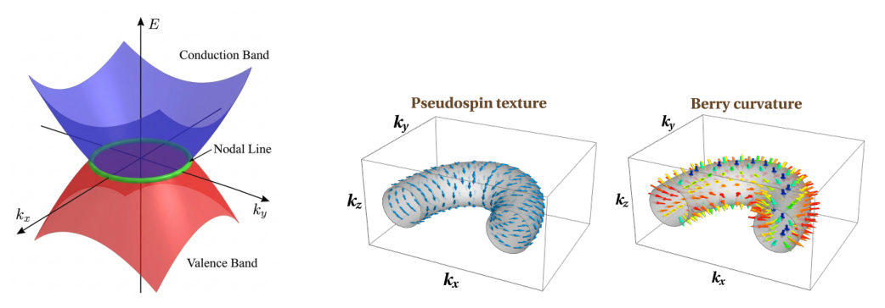
<figcaption class="paper-figure-caption"><b>Fig 1.</b> FIG. 1. Pictorial depiction of some unique features of VNRs: (a) Dispersion E against the kxky-plane showing two bands crossing along a circle (highlighted in green), setting kz = 0. (b) Nature of the vector fields d(k) [or, equivalently, d0(k) in the vicinity of the VNR] and Ωs=2(k) in the vicinity of a section of the toroidal Fermi surface (gray). The former displays a smoke-ring pattern.</figcaption>
</figure>
<figure class="paper-figure-card">
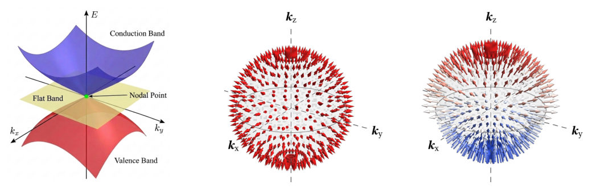
<figcaption class="paper-figure-caption"><b>Fig 2.</b> FIG. 2. Pictorial depiction of some unique features of HSMs and TSMs: (a) Dispersion E against the kxky-plane showing two bands crossing at the nodal point (highlighted in green), setting kz = 0, and the flat-band (highlighted in yellow). (b) Monopole-like BC field near the node of a TSM with C = ±2, exhibiting a net outward flux, and the dipolar BC field near the node of an HSM (C = 0), characterised by opposite field lines in the two hemispheres and vanishing total flux through the sphere.</figcaption>
</figure>
<figure class="paper-figure-card">
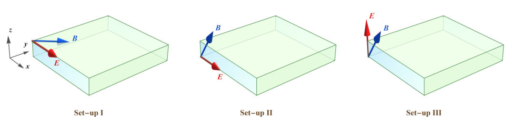
<figcaption class="paper-figure-caption"><b>Fig 3.</b> FIG. 3. The three inequivalent planar-Hall configurations analysed in this work, shown relative to the kz = 0 plane and the Cartesian coordinates with unit vectors (ˆx, ˆy, ˆz). Red and blue arrows denote the applied electric (E) and magnetic (B) fields, respectively. Set-up I: E = Ex ˆx, B = Bx ˆx+By ˆy. Set-up II: E = Ex ˆx, B = Bx ˆx+Bz ˆz. Set-up III: E = Ez ˆz, B = Bx ˆx+Bz ˆz. In each set-up, θ denotes the angle between B and the x-axis, so that Bx = |B| cos θ together with By = |B| sin θ in set-up I, or Bz = |B| sin θ in set-ups II and III.</figcaption>
</figure>
<figure class="paper-figure-card">
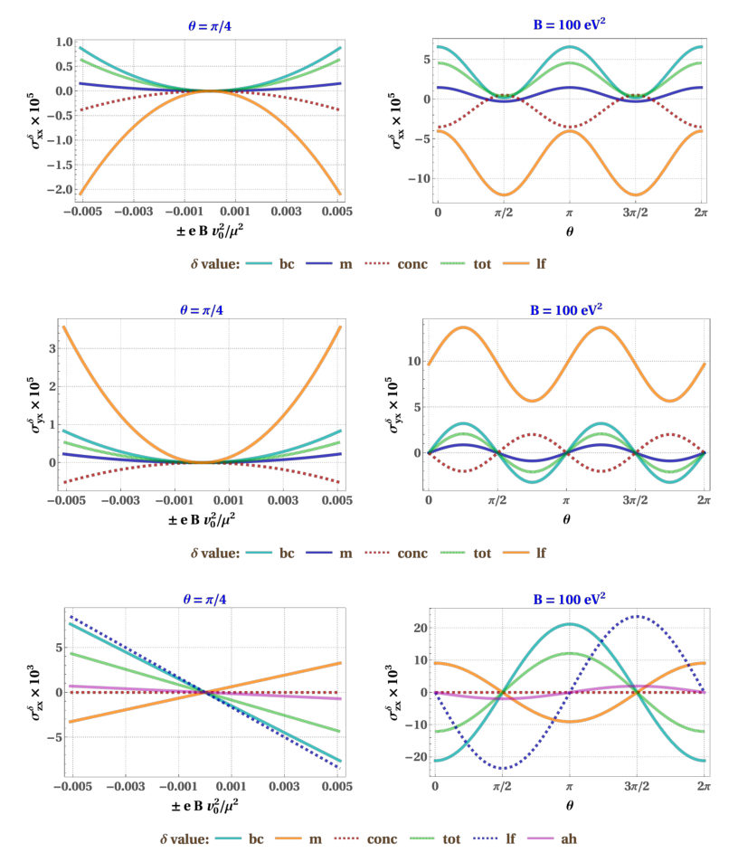
<figcaption class="paper-figure-caption"><b>Fig 4.</b> FIG. 4. Set-up I for VNR: Behaviour of conductivity curves (in eV) as functions of e B v2 0/µ2 and θ. Here we have omitted showing the σah yx curve as its order of magnitude is highly incompatible with the remaining curves.</figcaption>
</figure>
<figure class="paper-figure-card">
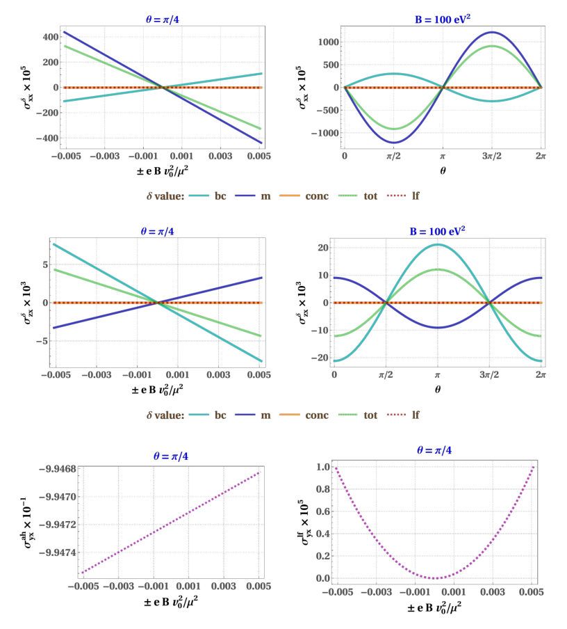
<figcaption class="paper-figure-caption"><b>Fig 5.</b> FIG. 5. Set-up II for VNR: Behaviour of the conductivity curves (in eV) as functions of e B v2 0/µ2 and θ. For σyx, we have omitted showing the θ-dependence, and both panels show the field-strength dependence of the AH and LFO parts instead.</figcaption>
</figure>
</div>

<p><strong>Summary.</strong> This theoretical work calculates the magnetoelectric conductivity in nodal semimetals, focusing on the difference between dipole-like and monopole-like Berry curvature sources. It demonstrates that systems with dipolar topology, like VNR and HSM, exhibit unique, symmetry-forbidden magnetoelectric responses compared to standard Weyl semimetals. This highlights the importance of the underlying topological structure in determining measurable transport properties.</p>
<p><strong>Why it may be interesting.</strong> The focus on geometric properties like Berry curvature dipoles and their direct, measurable impact on transport coefficients (magnetoelectric response) provides a concrete link between advanced topological invariants and observable condensed matter phenomena.</p>
<details>
<summary>Detailed structure</summary>
<p><strong>Main problem.</strong> The paper computes the linear magnetoelectric conductivity in planar-Hall geometries for topological semimetals, specifically contrasting systems with dipolar versus monopole-like Berry curvature sources.</p>
<p><strong>Main result.</strong> The dipolar nature of the Berry curvature and Orbital Magnetic Moment (OMM) generates unique, symmetry-forbidden odd powers of the magnetic field in the in-plane conductivity channels, which is absent in systems with monopole-like sources.</p>
<p><strong>Method.</strong> The calculations employ the semiclassical Boltzmann formalism within the relaxation-time approximation, evaluating contributions from Drude, BC, OMM, anomalous-Hall, and Lorentz-force terms.</p>
<p><strong>Model / system.</strong> The study analyzes two primary models: the two-band Vortex Nodal-Ring (VNR) semimetal and the three-band Hopf Semimetal (HSM). Comparisons are drawn with Weyl semimetals (monopole sources) and other nodal systems.</p>
<p><strong>Key observables.</strong> Linear magnetoelectric conductivity ($\sigma_{lf}$), Berry curvature flux (dipolar vs. monopole), and the presence of odd powers of $|B|$ in in-plane response channels.</p>
<p><strong>Important parameters / regimes.</strong> Cubic order in the magnetic field ($B^3$), and the specific planar-Hall field configurations.</p>
<p><strong>Assumptions / limitations.</strong> Calculations are performed using the semiclassical Boltzmann formalism and assume static, uniform electric and magnetic fields.</p>
<p><strong>Figures summary.</strong> Figure 1 shows the smoke-ring pattern of the vector field $\mathbf{d}(\mathbf{k})$ near a VNR section. Figure 2 compares the BC field near a TSM (monopole-like) versus an HSM (dipolar, zero net flux).</p>
<p><strong>Paper structure.</strong> The paper systematically analyzes the conductivity in different planar-Hall setups, comparing the VNR and HSM models. It details the vanishing of certain contributions (e.g., internode scattering in HSM) and contrasts the resulting magnetoelectric response with known monopole-like systems.</p>
</details>
<details>
<summary>Abstract</summary>
<p>We compute the linear magnetoelectric conductivity of a two-band vortex nodal-ring (VNR) semimetal and a three-band Hopf semimetal (HSM) within the semiclassical Boltzmann formalism in the relaxation-time approximation. We consider three inequivalent planar-Hall configurations, in which the electric ($\boldsymbol E$) and magnetic ($\boldsymbol B$) fields are oriented differently with respect to the nodal-ring plane and the BC-dipole axis. Unlike Weyl and multifold semimetals, where Berry-curvature (BC) flux originates from monopole-like sources, both systems host dipole-like BC sources and vanishing Chern numbers. Working consistently to cubic order in the magnetic field, we evaluate the Drude, BC, orbital-magnetic-moment (OMM), anomalous-Hall, and Lorentz-force contributions to the conductivity. In both systems, the dipolar BC and OMM generate odd powers of $|\boldsymbol B|$ in in-plane response channels that are symmetry-forbidden in systems with monopole-like BC sources. For the HSM, the internode-scattering contribution to the conductivity vanishes identically. By comparing the VNR with a $\mathcal{PT}$-broken gapped nodal ring and the HSM with a pseudospin-1 triple-point semimetal, we demonstrate that the dipolar nature of the BC gives rise to distinctive features in magnetoelectric response that are absent in semimetals with monopole-like BC flux.</p>
</details>
<p><sub><a href="#top">↑ back to top</a></sub></p>

<p><a id="paper-2609.26709"></a></p>
<h3 id="nonlinear-spin-polarization-enables-neel-order-switching-in-centrosymmetric-altermagnets"><a href="http://arxiv.org/abs/2609.26709v1">Nonlinear Spin Polarization Enables Néel Order Switching in Centrosymmetric Altermagnets</a></h3>
<p><strong>Authors:</strong> Sunit Das, Sayan Sarkar, Amit Agarwal<br>
<strong>Type:</strong> theory · <strong>Category:</strong> other · <strong>PDF:</strong> <a href="https://arxiv.org/pdf/2609.26709v1">https://arxiv.org/pdf/2609.26709v1</a><br>
<strong>Analysis basis:</strong> full PDF text, analyzed in chunks
<strong>Topic relevance:</strong> <code>Keldysh / 2PI / non-Gaussian methods</code> <strong>1/5</strong> · <code>analog quantum simulation</code> <strong>1/5</strong> · <code>driven-dissipative phase transition</code> <strong>1/5</strong> · <code>methods for driven-dissipative</code> <strong>1/5</strong> · <code>non-equilibrium universality</code> <strong>1/5</strong> · <code>quantum measurements</code> <strong>1/5</strong></p>
<div class="figure-strip-hint">↔ Scroll figures horizontally</div>
<div class="paper-figures-scroll">
<figure class="paper-figure-card">
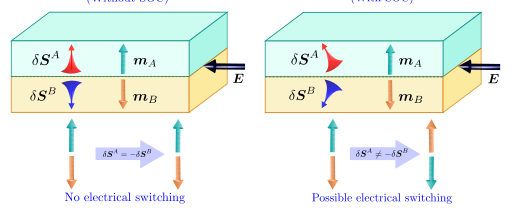
<figcaption class="paper-figure-caption"><b>Fig 1.</b> FIG. 1. Schematic of nonlinear spin polarization- driven N´eel order switching. (a) In the nonrelativistic limit, centrosymmetric altermagnets can host a staggered nonlinear spin polarization collinear with the N´eel vector, δSA = −δSB. Being parallel to the local moments, this response is torque-inactive. (b) Finite SOC generates an additional transverse spin component, so that the total sublattice spin polarizations are no longer exactly opposite, δSA ̸= −δSB. The resulting coexistence of transverse and staggered collinear spin polarization components produces the torques required for electrical reversal of the N´eel order.</figcaption>
</figure>
<figure class="paper-figure-card">
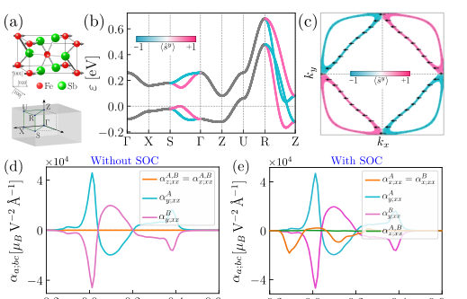
<figcaption class="paper-figure-caption"><b>Fig 2.</b> FIG. 2. Nonlinear spin polarization in minimal model of doped FeSb2. (a) Crystal structure and Brillouin zone of FeSb2, with the N´eel vector oriented along ˆn = ˆy. (b) Spin- resolved band structure obtained from the minimal model along the Γ-X-S-Γ-Z–U-R-Z high-symmetry path, exhibiting the characteristic nonrelativistic altermagnetic spin splitting along Γ-S and Z-R. The color scale denotes the spin expectation value ⟨ˆsy⟩. (c) Spin-resolved Fermi contour at µ = 0.16 eV in the kz = 0 plane. The color scale denotes ⟨ˆsy⟩, while the arrows indicate the SOC- induced transverse spin component ⟨ˆsx⟩. (d) Sublattice- resolved nonlinear spin polarization as functions of chemical potential in the...</figcaption>
</figure>
<figure class="paper-figure-card">
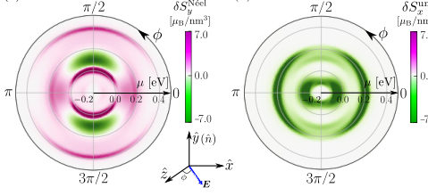
<figcaption class="paper-figure-caption"><b>Fig 3.</b> FIG. 3. Angular variation of nonlinear spin polarization. Angular dependence of (a) the nonlinear N´eel spin polarization δSN´eel y without SOC and (b) the SOC- induced δSuni x , as the electric field E is rotated in the xz plane. The radial coordinate denotes the chemical potential µ. Here, we have used E = 3 × 106 V/m and τ = 1 ps. Note that SOC-induced changes in δSN´eel y are negligible, hence not added in (a).</figcaption>
</figure>
<figure class="paper-figure-card">
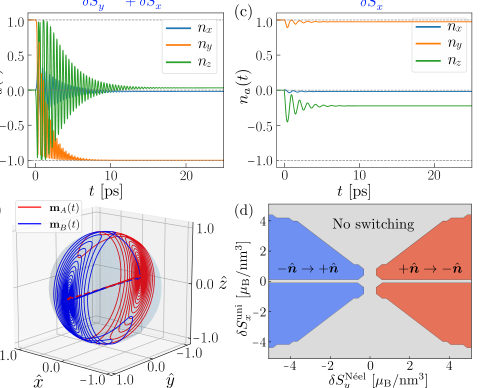
<figcaption class="paper-figure-caption"><b>Fig 4.</b> FIG. 4. N´eel order dynamics of FeSb2. (a) Time evolution of the N´eel vector components under the combined action of spin-orbit torque generated from the δSN´eel y and δSuni x showing deterministic ∼180◦switching. Here, we used the values of δSN´eel y and δSuni x for µ = 0.1 eV, and E = 3 × 106 ˆx V/m. (b) Three-dimensional trajectories of the two sublattice magnetizations during the switching process. (c) N´eel order dynamics in the presence of only the SOC-induced transverse spin polarization, exhibiting damped oscillations toward a tilted state without deterministic switching. (d) Switching phase diagram as a function of the staggered collinear and transverse spin polarization...</figcaption>
</figure>
<figure class="paper-figure-card">
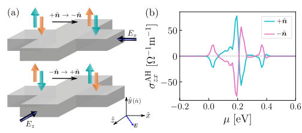
<figcaption class="paper-figure-caption"><b>Fig 5.</b> FIG. 5. Electrical write-read scheme for the N´eel order in FeSb2. (a) Schematic device configurations for deterministic switching between the two opposite N´eel states, achieved by changing the orientation of the applied electric field. The upper (lower) configuration illustrates the electric- field geometry used for switching between the corresponding opposite N´eel orientations. (b) Anomalous Hall conductivity σAH zx as a function of chemical potential for the two N´eel configurations, +ˆn and −ˆn. Reversal of the N´eel vector reverses the sign of the anomalous Hall response, providing an electrical readout of the magnetic state.</figcaption>
</figure>
</div>

<p><strong>Summary.</strong> This work develops a theoretical framework to electrically switch the Néel order in centrosymmetric altermagnets, overcoming the symmetry-imposed prohibition on linear current effects. By analyzing nonlinear spin polarization, the authors show that the combination of a staggered response and a SOC-induced transverse component generates the necessary torque for deterministic switching. This establishes a novel nonlinear write-read mechanism for these materials.</p>
<p><strong>Why it may be interesting.</strong> While primarily condensed matter magnetism, the concept of using non-linear, symmetry-protected responses (like the second-order polarization) to control quantum states (magnetic order) is highly relevant to open quantum systems and non-equilibrium dynamics.</p>
<details>
<summary>Detailed structure</summary>
<p><strong>Main problem.</strong> The primary challenge addressed is achieving deterministic electrical switching of the Néel order in centrosymmetric altermagnets, a process hindered because linear current-induced spin polarization is forbidden by inversion symmetry.</p>
<p><strong>Main result.</strong> The authors establish a nonlinear electrical write-read scheme by showing that the interplay between the nonrelativistic staggered spin response and a SOC-induced uniform transverse component enables deterministic $180^\circ$ reversal of the Néel order.</p>
<p><strong>Method.</strong> The study combines symmetry analysis using spin group theory to constrain nonlinear spin polarization, quantum kinetic calculations (density matrix evolution), and macro-spin simulations using the Landau-Lifshitz-Gilbert equation.</p>
<p><strong>Model / system.</strong> The research focuses on centrosymmetric altermagnets, using a minimal tight-binding model for $ ext{FeSb}_2$ as a concrete example. The physics is governed by the interplay between nonrelativistic spin-split bands and finite spin-orbit coupling (SOC).</p>
<p><strong>Key observables.</strong> Néel vector reversal ($180^\circ$ switching), anomalous Hall response (for state readout), and the coexistence/interaction of uniform and staggered nonlinear spin polarization components.</p>
<p><strong>Important parameters / regimes.</strong> The mechanism is critically dependent on the presence of finite SOC, which generates the necessary transverse component, and the electric field orientation, which controls the switching direction.</p>
<p><strong>Assumptions / limitations.</strong> The analysis relies on a perturbative expansion in the weak-field regime and assumes the validity of the minimal model for the altermagnet $ ext{FeSb}_2$.</p>
<p><strong>Figures summary.</strong> Figure 1 schematically illustrates the mechanism: the nonrelativistic limit yields a torque-inactive, collinear response, while finite SOC introduces a transverse component, leading to a non-zero torque capable of driving reversal.</p>
<p><strong>Paper structure.</strong> The paper first establishes the symmetry constraints on nonlinear spin polarization in the nonrelativistic limit. It then incorporates finite SOC to generate a transverse component. Finally, macro-spin simulations demonstrate how the cooperation between the staggered and transverse components enables deterministic switching, forming a write-read scheme.</p>
</details>
<details>
<summary>Abstract</summary>
<p>Deterministic electrical switching of the Néel order remains challenging in centrosymmetric altermagnets, where linear current-induced spin polarization is forbidden by inversion symmetry. Here, we establish a nonlinear route to Néel order control. Spin group symmetry shows that, in the nonrelativistic limit, the nonlinear spin polarization is constrained along the Néel vector, with a staggered response allowed in $8$ of the $10$ nontrivial spin-Laue groups. Although this Néel spin polarization is torque-inactive by itself, finite spin-orbit coupling can generate an additional uniform component transverse to the Néel vector. Using a minimal model for the $d$-wave altermagnet FeSb$_2$, we demonstrate the coexistence of the nonrelativistic staggered response with an SOC-induced uniform transverse component. Landau-Lifshitz-Gilbert equation-based macro-spin simulations reveal that the transverse component alone produces oscillatory dynamics, whereas its cooperative action with the staggered response enables deterministic $180^\circ$ reversal. We further show that changing the electric field orientation reverses the staggered spin response and selects the switching direction, while the opposite Néel states can be distinguished by their anomalous Hall response. Our results establish a nonlinear electrical write-read scheme for centrosymmetric altermagnets.</p>
</details>
<p><sub><a href="#top">↑ back to top</a></sub></p>

<p><a id="paper-2609.25851"></a></p>
<h3 id="cryogenic-voltage-control-of-magnetism-in-silicon-integrated-newline-srtiomath1058mathfe-heterostructures"><a href="http://arxiv.org/abs/2609.25851v1">Cryogenic Voltage Control of Magnetism in Silicon-Integrated \newline SrTiO$_3$/Fe Heterostructures</a></h3>
<p><strong>Authors:</strong> Stijn Reniers, Emile Fourneau, Andries Boelen, Xing-Jian Liu, Ekaterina Gorokh, Lukas Nulens, Vivek Kumar, Luca Ceccon, Christian Haffner, Clement Merckling, Jun-Yi Ge, Bertrand Dupé, Alejandro V. Silhanek, Kristiaan Temst, Joris Van de Vondel<br>
<strong>Type:</strong> both · <strong>Category:</strong> other · <strong>PDF:</strong> <a href="https://arxiv.org/pdf/2609.25851v1">https://arxiv.org/pdf/2609.25851v1</a><br>
<strong>Analysis basis:</strong> full PDF text, analyzed in chunks
<strong>Topic relevance:</strong> <code>analog quantum simulation</code> <strong>1/5</strong> · <code>driven-dissipative phase transition</code> <strong>1/5</strong> · <code>quantum measurements</code> <strong>1/5</strong></p>
<div class="figure-strip-hint">↔ Scroll figures horizontally</div>
<div class="paper-figures-scroll">
<figure class="paper-figure-card">
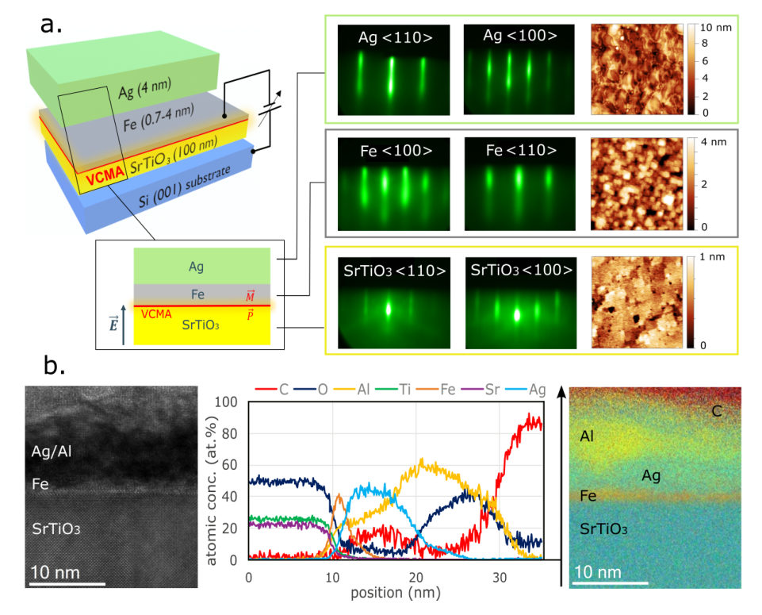
<figcaption class="paper-figure-caption"><b>Fig 1.</b> Figure 1: (a) Schematic representation of the sample stack, with the interfacial nature of electronic VCM (VCMA) indicated. For each layer surface, RHEED-recordings (during deposition) and AFM scans (after deposition, scan area 1 x 1 µm2) are shown in separate insets. (b) TEM (left panel) and EDX (middle and right panel) measurements of the sample with Fe thickness 0.8 nm. The normalized integral of the EDX compositional map is plotted in the middle panel along the black arrow direction to obtain the relative elemental profile of the stack.</figcaption>
</figure>
<figure class="paper-figure-card">
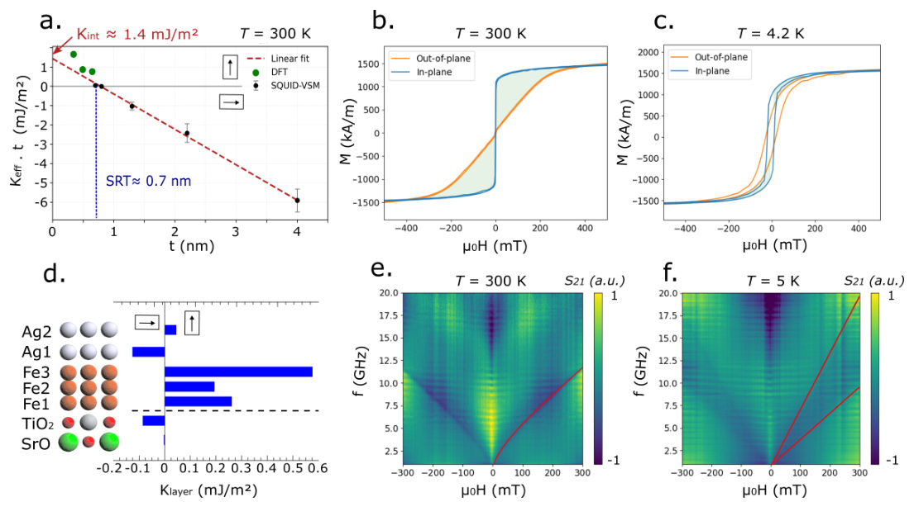
<figcaption class="paper-figure-caption"><b>Fig 2.</b> Figure 2: (a) Thickness dependence of the effective areal magnetic anisotropy energy density Keff · tF e at T = 300 K, following a linear trend consistent with equation (1). Keff was obtained from magnetization hysteresis loop analysis of samples with different tF e, shown here for tF e = 0.8 nm at (b) 300 K and (c) 4.2 K. The green points are computed from DFT calculations on continuous Fe layers of 2, 3 and 4 monolayers. (d) DFT model of a continuous 3 monolayer Fe system, with layer-resolved anisotropy contributions. FMR resonance spectra for tF e = 0.8 nm were recorded at T = (e) 300 K and (f) 5 K. The red curve in (e) is obtained from fitting the modified Kittel equation. The red lines...</figcaption>
</figure>
<figure class="paper-figure-card">
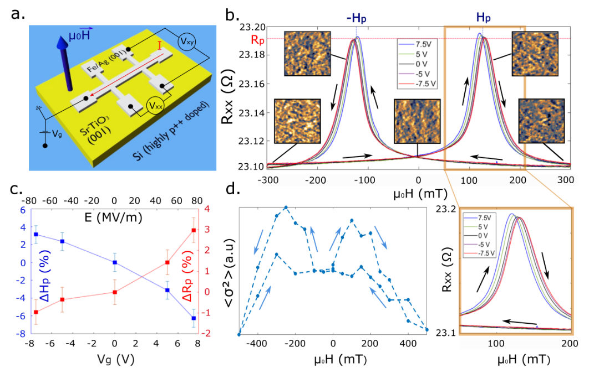
<figcaption class="paper-figure-caption"><b>Fig 3.</b> Figure 3: Magnetotransport measurements of the Fe/Ag system at T = 6 K, with µ0H applied perpendicular to the current plane. (a) Measurement configuration for Rxx and Rxy, with gate voltage applied between the Fe/Ag bridge (ground) and silicon substrate (signal). (b) Rxx(H) measurement, with MFM-images (obtained at T = 4 K) in the insets, visualizing the corresponding magnetic microstructure. The extracted window shows the resistance peaks in more detail. (c) Hp(VG) and Rxx(VG; Hp)-dependences, expressed as a percentage of the Hp(0) and Rxx(0, Hp)- Rxx(0, 0) values, respectively. The approximate linear trend is consistent with DFT-predictions. (d) Extracted average variance &lt; σ2 &gt; of the...</figcaption>
</figure>
<figure class="paper-figure-card">
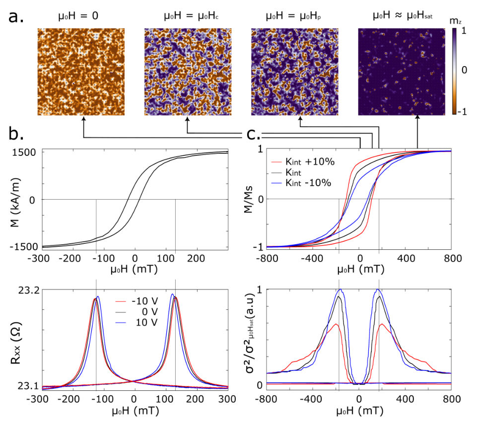
<figcaption class="paper-figure-caption"><b>Fig 4.</b> Figure 4: (a) Micromagnetic magnetization maps of the 0.8 nm Fe slab at different magnetic fields during magnetization reversal. Simulation area is 1 x 1 µm2. (b) Experimentally obtained M(H) (top) and Rxx(H) (bottom) loops for magnetic field applied perpendicular to the Fe plane, at back-gate voltage -10 V (red), 0 V (black) and 10 V (blue). (c) Macroscopic normalized M(H) (top) and σ2(H) (bottom) loops, extracted from the micromagnetic simulations, with positive (red), zero (black) and negative (blue) ∆Kint. The links to the magnetization maps at different field are indicated by arrows.</figcaption>
</figure>
<figure class="paper-figure-card">
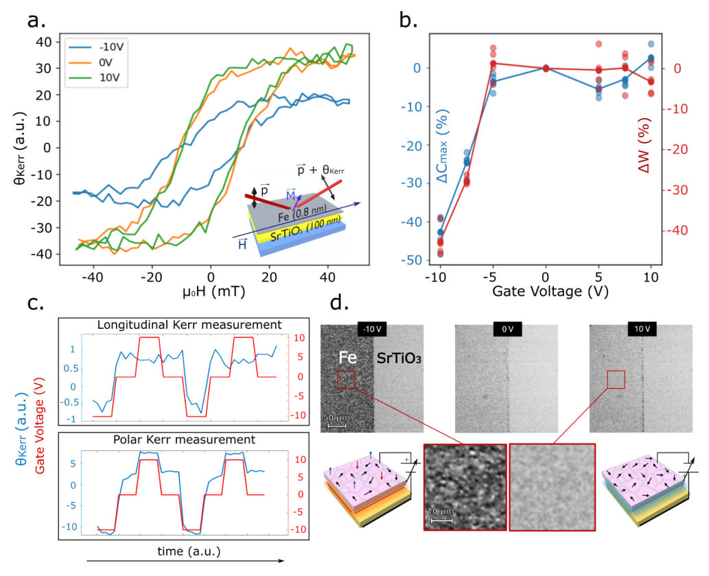
<figcaption class="paper-figure-caption"><b>Fig 5.</b> Figure 5: MOKE measurements of the tF e = 0.8 nm sample under voltage gating. (a) Longitudinal MOKE measurements, showing the in-plane magnetization component along the applied magnetic field direction (Fe&lt;100&gt;) at T = 5 K. Negative gate voltage reduces the observed amplitude contrast Cmax = θKerr,L(50 mT) - θKerr,L(-50 mT) and hysteretic area of the θKerr(H) loop, indicating a reduction in the in-plane magnetization component. (b) Gate voltage dependence of the relative change in Kerr amplitude contrast ∆Cmax and hysteretic area ∆W. (c) Evolution of Longitudinal and Polar Kerr signals in the Fe region while applying back-gate voltage pulses. (d) Polar Kerr measurements, reflecting the...</figcaption>
</figure>
</div>

<p><strong>Summary.</strong> This work investigates using voltage control to manipulate magnetism in SrTiO3/Fe heterostructures for next-generation cryogenic electronics. By demonstrating that an electric field can modify the magnetic domain structure, the authors propose a highly energy-efficient alternative to conventional magnetic writing methods. This research establishes a viable material platform for integrating magnetic functionality into low-power quantum and classical computing circuits.</p>
<p><strong>Why it may be interesting.</strong> While focused on solid-state spintronics, the underlying mechanism—controlling magnetic order via an electric field coupled to a ferroelectric/dielectric interface—is highly relevant to understanding emergent quantum phenomena in engineered materials.</p>
<details>
<summary>Detailed structure</summary>
<p><strong>Main problem.</strong> The primary goal is to develop low-power, scalable magnetic memory elements for cryogenic electronics by replacing high-power current-based writing with voltage-controlled magnetization switching.</p>
<p><strong>Main result.</strong> The authors successfully demonstrated and quantified the Voltage Control of Magnetism (VCM) in epitaxial SrTiO3/Fe heterostructures, showing that back-gate voltage can modify the magnetic domain structure.</p>
<p><strong>Method.</strong> The study combines experimental characterization (MOKE, SQUID-VSM, MFM) with theoretical modeling (DFT, micromagnetic simulations) to analyze the electric field's influence on magnetic anisotropy.</p>
<p><strong>Model / system.</strong> The physical system is an epitaxial SrTiO3/Fe thin film heterostructure grown on a CMOS-compatible Si substrate, leveraging the ferroelectric/dielectric properties of SrTiO3.</p>
<p><strong>Key observables.</strong> Magnetization hysteresis loops (MOKE), domain structure visualization (MFM), effective magnetic anisotropy ($K_{	ext{eff}}$), and the VCM coefficient ($\xi$).</p>
<p><strong>Important parameters / regimes.</strong> Cryogenic temperatures, ultrathin Fe film thickness (near the Spin Reorientation Transition, e.g., 0.7 nm), and applied back-gate voltage (V).</p>
<p><strong>Assumptions / limitations.</strong> The analysis relies on linear approximations for the VCM coefficient ($\xi$) and assumes structural continuity and interfacial quality are maintained during growth.</p>
<p><strong>Figures summary.</strong> Figures show sample stacks, $M(H)$ loops varying with thickness and voltage, domain structure images (MFM) showing voltage-dependent domain changes, and theoretical plots relating anisotropy to thickness.</p>
<p><strong>Paper structure.</strong> The paper progresses from establishing the need for low-power cryogenic spintronics to selecting the SrTiO3/Fe system, characterizing the magnetic anisotropy dependence on thickness, and finally demonstrating the voltage-tunable magnetic state using multiple characterization techniques.</p>
</details>
<details>
<summary>Abstract</summary>
<p>Cryogenic electronics forms a rapidly emerging research domain for high-performance and power-efficient computing applications. Incorporating nanomagnetic components in cryogenic circuitry adds highly valuable functionality, facilitating downscaling, reducing energy consumption and introducing time-reversal symmetry breaking. Furthermore, low-temperature environments enhance magnetic stability and switching efficiency at nanoscale dimensions, reinforcing the potential of cryogenic nanomagnets. To fully leverage these opportunities, magnetic control schemes require alternative options to current-based writing, which is the main bottleneck regarding power consumption and downscaling. In this regard, voltage-based gating of the magnetic state could drastically enhance operational efficiency and integration density. In this work, we investigate cryogenic Voltage Control of Magnetism (VCM) in epitaxial SrTiO$_3$/Fe thin film heterostructures on a CMOS compatible Si substrate. We demonstrate and quantify voltage-controlled modifications of the magnetic domain structure, consistent with electric field-controlled magnetic anisotropy at the Fe/SrTiO$_3$ interface. These findings provide a viable material system for the development of next-generation magnetic domain-based devices for classical and quantum computing.</p>
</details>
<p><sub><a href="#top">↑ back to top</a></sub></p>

<p><a id="paper-2609.25608"></a></p>
<h3 id="scaling-behavior-of-eigenspectrum-for-entanglement-from-correlation-matrices"><a href="http://arxiv.org/abs/2609.25608v1">Scaling behavior of eigenspectrum for entanglement from correlation matrices</a></h3>
<p><strong>Authors:</strong> Lih-King Lim<br>
<strong>Type:</strong> theory · <strong>Category:</strong> statistical mechanics · <strong>PDF:</strong> <a href="https://arxiv.org/pdf/2609.25608v1">https://arxiv.org/pdf/2609.25608v1</a><br>
<strong>Analysis basis:</strong> full PDF text, analyzed in chunks
<strong>Topic relevance:</strong> <code>analog quantum simulation</code> <strong>1/5</strong> · <code>non-equilibrium universality</code> <strong>1/5</strong></p>
<div class="figure-strip-hint">↔ Scroll figures horizontally</div>
<div class="paper-figures-scroll">
<figure class="paper-figure-card">
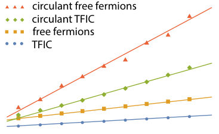
<figcaption class="paper-figure-caption"><b>Fig 1.</b> FIG. 1. Scaling behavior of entanglement entropy ∼(c/3) log2 LA for free lattice fermions (squares) and transverse field Ising chain (circles) at criticality. They obey conformal field theory result with c = 1 and c = 1/2, respectively. The circulant approximation to the original problems, represented with triangles and diamonds, respec- tively, giving the logarithmic dependences.</figcaption>
</figure>
<figure class="paper-figure-card">
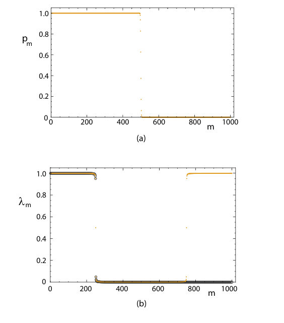
<figcaption class="paper-figure-caption"><b>Fig 2.</b> FIG. 2. (a) Exact eigenvalue distribution from the correlation funtion for free lattice fermions. (b) Eigenvalue distribution from the circu- lant matrix approximation. Full dots (in yellow) are from the discrete summation. Open circles (in grey) are in the continuum limit. Here LA = 1000, nf = 0.5.</figcaption>
</figure>
<figure class="paper-figure-card">
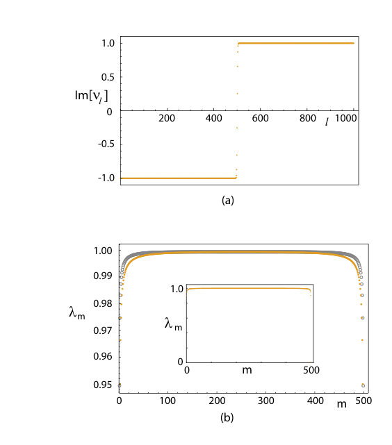
<figcaption class="paper-figure-caption"><b>Fig 3.</b> FIG. 3. (a) Exact eigenvalue distribution (purely imaginary) from the correlation matrix for the transverse field Ising chain at the quantum critical point, with l = 1, 2, . . . , 2LA. (b) Comparison of the cir- culant matrix eigenvalues Eq. (31) (full dots in yellow), with the large-LA expression Eq. (33) (open circles in grey). Inset: The full eigenvalue distribution with the circulant approximation. Here LA = 500.</figcaption>
</figure>
<figure class="paper-figure-card">
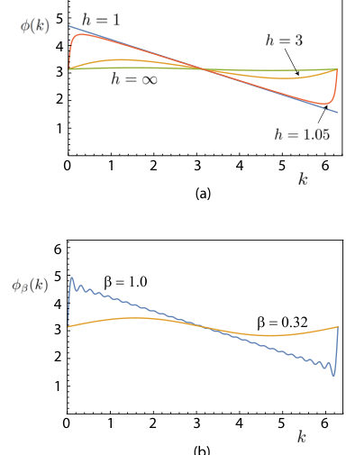
<figcaption class="paper-figure-caption"><b>Fig 4.</b> FIG. 4. (a) The phase profile ϕ(k) of the transverse field Ising chain for various magnetic field values: h = 1, 1.05, 3 and h = ∞. (b) The sawtooth function Eq. (35) with β = 1 containing 30 harmonics (in blue) to approximate the phase profile for h →1, and β = 0.32 with first harmonics for h ≈3 (in yellow).</figcaption>
</figure>
<figure class="paper-figure-card">
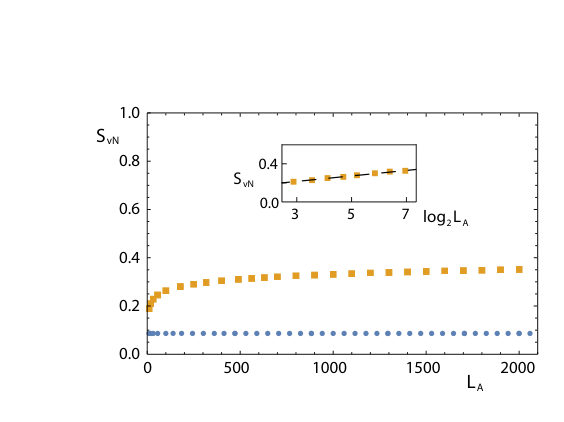
<figcaption class="paper-figure-caption"><b>Fig 5.</b> FIG. 5. Scaling behavior of entanglement entropy for non-critical transverse field Ising chain from exact correlation function (cir- cles) and circulant matrix (squares) for h = 3. Inset: Linear- log plot for the entanglement from the circulant matrix showing a very weak logarithmic dependence on the subsystem size fitted with (1/33) log2 LA + 0.12.</figcaption>
</figure>
</div>

<p><strong>Summary.</strong> This work analyzes entanglement entropy by studying the eigenvalues of correlation matrices for 1D quantum models like free fermions and the Ising chain. By approximating the correlation matrices as circulant, the authors show that the bulk eigenvalue scaling directly explains the expected logarithmic divergence of entanglement entropy at quantum critical points. This provides a spectral perspective on a key result from Conformal Field Theory.</p>
<p><strong>Why it may be interesting.</strong> The connection drawn between the spectral properties (eigenvalue scaling) and the universal thermodynamic quantity (entanglement entropy) provides a powerful, spectral tool for analyzing critical phenomena in 1D quantum systems.</p>
<details>
<summary>Detailed structure</summary>
<p><strong>Main problem.</strong> The paper investigates the scaling behavior of eigenvalues of correlation matrices to derive a spectral understanding of entanglement entropy in quantum systems.</p>
<p><strong>Main result.</strong> The bulk of the eigenspectrum scales as $1/L_A$ for critical systems, which successfully explains the robust $\log L_A$ scaling of entanglement entropy predicted by Conformal Field Theory.</p>
<p><strong>Method.</strong> The authors employ a circulant matrix approximation to analyze the Toeplitz correlation matrices in the large dimension limit, allowing for analytical calculation of eigenvalue distributions.</p>
<p><strong>Model / system.</strong> The study analyzes entanglement in one-dimensional quantum systems, specifically free lattice fermions (tight-binding model) and the transverse field Ising chain. The entanglement is quantified via the reduced density matrix derived from the correlation matrix.</p>
<p><strong>Key observables.</strong> Entanglement Entropy ($S_{vN}$), eigenvalues ($\{p_i\}$) of the correlation matrix, and the correlation matrix itself.</p>
<p><strong>Important parameters / regimes.</strong> Subsystem size ($L_A$), fermion density ($n_f$), and the magnetic field strength ($h$) for the Ising chain, particularly the critical point ($h=1$).</p>
<p><strong>Assumptions / limitations.</strong> The primary approximation is replacing the Toeplitz correlation matrix with an asymptotically equivalent circulant matrix to facilitate analytical eigenvalue analysis.</p>
<p><strong>Figures summary.</strong> Figures illustrate the scaling of entanglement entropy ($\sim \log L_A$) for both free fermions and the Ising chain at criticality, comparing exact results with the circulant approximation. Other figures show eigenvalue distributions for different system parameters.</p>
<p><strong>Paper structure.</strong> The paper first establishes the connection between entanglement entropy and the eigenvalues of the correlation matrix. It then develops the circulant approximation for both free fermions and the Ising chain. Finally, it analyzes the scaling behavior in the critical and non-critical regimes, demonstrating the $\log L_A$ dependence.</p>
</details>
<details>
<summary>Abstract</summary>
<p>We study the scaling behavior of the eigenvalues of correlation matrices, which characterize the entanglement of a subsystem with its complement part of a total pure state. A most distinguishing feature of entanglement entropy is its logarithmic dependence on the subsystem size for the groundstate of one-dimensional critical systems. Despite its robust universal character and relevance to a wide range of topics, a thorough understanding of this result requires sophisticated mathematical physics techniques or conformal field theory. The aim of our work is to shed light on this from the underlying eigenvalue distribution perspective. The central object is the correlation matrix, which takes the form of Toeplitz or block-Toeplitz matrix. We develop a circulant matrix approximation in the large matrix dimension limit, thus allowing for the individual eigenvalues behavior to be analysed analytically. We find that for both free lattice fermions and transverse field Ising chain, eigenvalues in the bulk of the eigenspectrum scales as $1/L_A$ with the subsystem size. Together with the extensivity of the entropy function, it explains the robust $\log_2 L_A$ scaling of entanglement at criticality. Perturbing from the entanglement-free limit of the Ising chain, we find a smooth crossover behavior to `non-critical' scaling that is characterized by a very slow logarithmic dependence rendering it seemingly a constant entanglement value expected of non-critical systems.</p>
</details>
<p><sub><a href="#top">↑ back to top</a></sub></p>

<p><a id="paper-2609.25219"></a></p>
<h3 id="a-unitary-fixed-point-away-from-threshold-momentum-surface-eft-for-strong-mixing"><a href="http://arxiv.org/abs/2609.25219v1">A Unitary Fixed Point Away from Threshold: Momentum-Surface EFT for Strong Mixing</a></h3>
<p><strong>Authors:</strong> Lorenzo De Ros, Javier Reig Navarro<br>
<strong>Type:</strong> theory · <strong>Category:</strong> quantum gases · <strong>PDF:</strong> <a href="https://arxiv.org/pdf/2609.25219v1">https://arxiv.org/pdf/2609.25219v1</a><br>
<strong>Analysis basis:</strong> full PDF text, analyzed in chunks
<strong>Topic relevance:</strong> <code>Keldysh / 2PI / non-Gaussian methods</code> <strong>1/5</strong></p>
<div class="figure-strip-hint">↔ Scroll figures horizontally</div>
<div class="paper-figures-scroll">
<figure class="paper-figure-card">
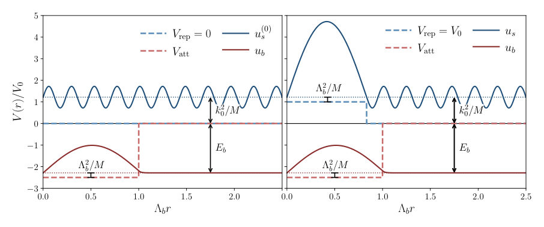
<figcaption class="paper-figure-caption"><b>Fig 1.</b> Figure 1: Schematic potentials and wavefunctions for the repulsive (blue) and attractive (red) channels. Dashed and solid curves denote the channel potentials and wavefunctions, respectively. In the left panel, the free scattering state u(0) s oscillates rapidly over the support of the bound state ub, leading to cancellations in the transition matrix element. In the right panel, a repulsive barrier reduces the local momentum of the scattering state us, so that the two wavefunctions vary on comparable length scales and the transition matrix element approaches its geometric size.</figcaption>
</figure>
<figure class="paper-figure-card">
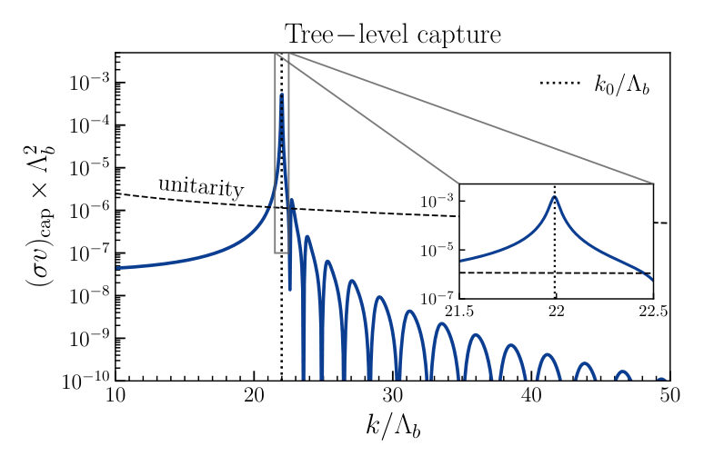
<figcaption class="paper-figure-caption"><b>Fig 2.</b> Figure 2: Tree-level cross section for the radiative capture, normalized to Λ2 b, as a function of the incoming momentum k/Λb. The dashed black curve denotes the inelastic s-wave unitarity bound. The vertical dotted line marks the momentum k0 where the strong mixing occurs. The inset zooms in the region where the rate violates the unitarity bound. For illustration, we choose V0/M ≃10−10 and Λb/M ≃10−6. These values yield MV0/Λ2 b ≃102 ≫1 and V0/Λb ≃10−4 ≪1, satisfying both the deep bound state and MPE conditions, summarized in Eq. (2.16).</figcaption>
</figure>
<figure class="paper-figure-card">
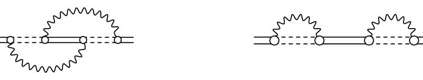
<figcaption class="paper-figure-caption"><b>Fig 3.</b> Figure 3: Contributions to the scattering amplitude at O(g4) for an incoming and an out- going state in the repulsive channel. Diagram (a) shows the irreducible two-loop self-energy correction (2PI), while diagram (b) shows the reducible iteration of the one-loop self-energy (2PR).</figcaption>
</figure>
<figure class="paper-figure-card">
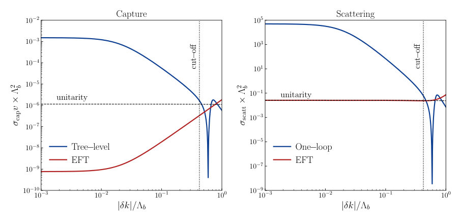
<figcaption class="paper-figure-caption"><b>Fig 4.</b> Figure 4: The left panel shows the capture cross section, obtained from the tree-level computation (blue line) and from the EFT expansion (red line) in the momentum region δk ≲Λ2 EFT/k0, which corresponds to the range shown in the inset plot of Fig. 2. The right panel shows the scattering cross section from the one-loop computation (blue line) and the EFT expansion (red line). We compare the capture and scattering cross sections to the inelas- tic and elastic unitarity bounds (dashed black lines), respectively. The EFT cut-off (black dot- ted lines) is chosen as the breakdown of the effective range expansion 2r2(k0δk)2/Λ2 EFT = k0, namely at δk = gΛEFT/(2π3/2). The numerical values of the...</figcaption>
</figure>
<figure class="paper-figure-card">
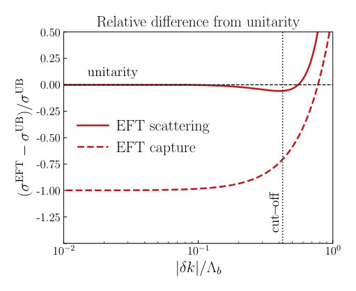
<figcaption class="paper-figure-caption"><b>Fig 5.</b> Figure 5: Relative size between the cross sections from the EFT expansion and the unitarity bounds, for the elastic (red solid line) and inelastic (red dashed line) processes. We show the momentum dependence in the region of validity of the EFT expansion k0δk &lt; Λ2 EFT. While the scattering cross section saturates the unitarity bound, the capture cross section is suppressed. The numerical values of the parameters of the toy model are the same as the ones chosen for Fig. 2 and Fig. 4.</figcaption>
</figure>
</div>

<p><strong>Summary.</strong> This paper develops a Momentum-Surface Effective Field Theory to handle strong, non-perturbative mixing effects in radiative capture processes. By identifying the breakdown of standard perturbation theory near a finite momentum $k_0$, the authors construct an EFT that systematically restores unitarity. This provides a powerful theoretical tool for describing strongly interacting quantum systems near unitarity limits.</p>
<p><strong>Why it may be interesting.</strong> This work directly addresses non-perturbative physics near unitarity, a central theme in modern quantum gas research, particularly concerning Feshbach resonances and universal low-energy physics.</p>
<details>
<summary>Detailed structure</summary>
<p><strong>Main problem.</strong> The paper analyzes non-perturbative dynamics in radiative capture processes in non-relativistic quantum systems, where weak underlying interactions can lead to strong mixing effects.</p>
<p><strong>Main result.</strong> The strong mixing leads to the necessity of a Momentum-Surface Effective Field Theory (EFT), which successfully restores unitarity and provides a systematic expansion for both elastic scattering and radiative capture.</p>
<p><strong>Method.</strong> The methodology involves systematic power counting, Renormalization Group (RG) evolution, and constructing a Momentum-Surface EFT organized around a finite momentum surface $k_0$.</p>
<p><strong>Model / system.</strong> The analysis uses a simple quantum-mechanical two-channel toy model involving fermions and a mediating scalar field, describing processes like radiative capture ($\xi + \xi 	o (\xi\eta) + \phi$).</p>
<p><strong>Key observables.</strong> Radiative capture cross sections ($\sigma_{	ext{cap}}$), scattering amplitudes, and the breakdown of perturbation theory signaled by $\sigma_{	ext{cap}}$ exceeding the unitarity bound.</p>
<p><strong>Important parameters / regimes.</strong> The analysis focuses on the strong mixing regime characterized by a finite momentum $k_0$, and involves scales like the binding energy ($\Lambda_b$) and the scattering length ($a$).</p>
<p><strong>Assumptions / limitations.</strong> The EFT assumes a hierarchy of expansions in kinematic and analytic terms, and the analysis is based on a simplified two-channel toy model.</p>
<p><strong>Figures summary.</strong> Figure 1 schematically illustrates the potentials and wavefunctions, contrasting the suppressed regime with the enhanced, geometric regime where strong mixing occurs.</p>
<p><strong>Paper structure.</strong> The paper progresses from analyzing the breakdown of perturbation theory in the toy model (Sec. 2), through the calculation of the capture amplitude (Sec. 3), to the systematic resummation using RG flow (Sec. 4), and finally deriving the Momentum-Surface EFT (Sec. 5).</p>
</details>
<details>
<summary>Abstract</summary>
<p>Radiative capture in a non-relativistic system can become non-perturbative even when the underlying transition interaction is weak. We demonstrate this mechanism in a simple quantum-mechanical two-channel model with a systematic power counting, where strong mixing between scattering and bound states develops in a narrow region around a finite momentum $k_0$, leading to a perturbative violation of unitarity. In this regime, the enhanced contributions factorize, reducing the dynamics to a free scattering state interacting through a strong local coupling. Under RG evolution in the factorization scale, this local interaction approaches a unitary fixed point, analogous to that of systems with an anomalously large scattering length. This motivates an EFT organized around the finite-momentum surface $|\mathbf{k}|=k_0$, describing fermions at unitarity with a linear dispersion relation. The resummation resulting from the EFT restores unitarity and provides a systematic expansion for both elastic scattering and radiative capture.</p>
</details>
<p><sub><a href="#top">↑ back to top</a></sub></p>

<p><a id="paper-2609.26005"></a></p>
<h3 id="electromagnetic-proximity-effects-and-spontaneous-currents-in-clean-superconducting-heterostructures"><a href="http://arxiv.org/abs/2609.26005v1">Electromagnetic Proximity Effects and Spontaneous Currents in Clean Superconducting Heterostructures</a></h3>
<p><strong>Authors:</strong> Jian-Lin Li, Chien-Te Wu, Klaus Halterman<br>
<strong>Type:</strong> theory · <strong>Category:</strong> other · <strong>PDF:</strong> <a href="https://arxiv.org/pdf/2609.26005v1">https://arxiv.org/pdf/2609.26005v1</a><br>
<strong>Analysis basis:</strong> full PDF text, analyzed in chunks
<strong>Topic relevance:</strong> <code>Keldysh / 2PI / non-Gaussian methods</code> <strong>1/5</strong></p>
<div class="figure-strip-hint">↔ Scroll figures horizontally</div>
<div class="paper-figures-scroll">
<figure class="paper-figure-card">

<figcaption class="paper-figure-caption"><b>Fig 1.</b> FIG. 1. Schematic illustration of the F1/F2/S heterostruc- ture composed of ferromagnetic and superconducting layers. The y-axis is normal to the interfaces. The first (second) ferromagnetic layer, denoted F1 (F2), has an in-plane homo- geneous magnetization or exchange field oriented at an angle of 0 (θ) relative to the z-axis in the x–z plane.</figcaption>
</figure>
<figure class="paper-figure-card">

<figcaption class="paper-figure-caption"><b>Fig 2.</b> FIG. 2. Spatial distributions of the spontaneous current density in the heterostructure for three weak-exchange-field configu- rations, demonstrating the switch-like role of the F2 layer in generating spontaneous currents. Except for the exchange-field parameters, all other parameters are fixed at the common values specified in the main text. The vertical black dashed lines indicate the interfaces between adjacent layers.</figcaption>
</figure>
<figure class="paper-figure-card">

<figcaption class="paper-figure-caption"><b>Fig 3.</b> FIG. 3. Spatial profiles of the spontaneous current density for three representative configurations in the strong-exchange-field regime. The results illustrate the switch-like role of the F2 layer in controlling the emergence of spontaneous currents. All parameters other than the exchange fields are fixed at the common values specified in the main text. The vertical dashed lines mark the interfaces between adjacent layers.</figcaption>
</figure>
<figure class="paper-figure-card">

<figcaption class="paper-figure-caption"><b>Fig 4.</b> FIG. 4. Spatial distributions of the spontaneous current in the heterostructure for fixed h2 and different values of h1, illustrating that h1 modifies the current distribution even though the switch-like effect is primarily associated with the F2 layer.</figcaption>
</figure>
<figure class="paper-figure-card">

<figcaption class="paper-figure-caption"><b>Fig 5.</b> Figure 4 clearly shows that increasing h1 progressively modifies the spatial profile of the spontaneous current. In Fig. 4(a), where h1 = 0.1, the current extends through- out the F1 layer. When h1 is increased to 0.5, how- ever, Fig. 4(b) shows that the current penetrating into F1 is strongly reduced, while the largest current density appears in F2 and extends deep into the S layer. In the half-metallic limit, corresponding to a very large h1, the spontaneous current is no longer discernible within F1 and survives only outside the F1 layer with a much smaller amplitude Jx/J0 ≈10−5, as shown in Fig. 4(c). The uncertainty associated with the initialization is far below 10−6 in this case and...</figcaption>
</figure>
</div>

<p><strong>Summary.</strong> This work theoretically models superconducting spin-valve heterostructures to understand how magnetic ordering induces spontaneous currents via electromagnetic proximity effects. By self-consistently solving the BdG and Maxwell equations, the authors show that these effects generate long-range magnetic fields and modify exotic odd-frequency triplet pairing. This provides a detailed, microscopic understanding of superconducting spintronics.</p>
<p><strong>Why it may be interesting.</strong> The coupling of superconducting pairing symmetries (triplet correlations) with classical electromagnetism (Maxwell equations) provides a rich platform for studying non-equilibrium quantum dynamics and emergent macroscopic currents.</p>
<details>
<summary>Detailed structure</summary>
<p><strong>Main problem.</strong> The paper investigates the complex interplay between electromagnetic proximity effects and conventional superconducting proximity effects when ferromagnets are placed in contact with superconductors.</p>
<p><strong>Main result.</strong> The study predicts that spontaneous currents can emerge in these heterostructures, and the resulting electromagnetic response extends across the entire superconducting layer, unlike simpler proximity models.</p>
<p><strong>Method.</strong> The research employs a self-consistent numerical solution of the coupled Bogoliubov-de Gennes and Maxwell equations, allowing for a microscopic description.</p>
<p><strong>Model / system.</strong> The physical system studied is clean ferromagnet/ferromagnet/superconductor spin-valve heterostructures, allowing the relative angle between the two ferromagnetic layers to be tuned.</p>
<p><strong>Key observables.</strong> Spontaneous currents, oscillatory singlet Cooper-pair amplitudes, long-ranged odd-frequency triplet correlations, and the resulting magnetic field profile.</p>
<p><strong>Important parameters / regimes.</strong> The relative angle between the ferromagnetic layers, the strength of the exchange field, and the thickness of the superconducting layer.</p>
<p><strong>Assumptions / limitations.</strong> The analysis assumes conventional s-wave superconductors and utilizes a semiclassical treatment for electromagnetic quantities.</p>
<p><strong>Figures summary.</strong> The notes mention a schematic illustration of the F1/F2/S heterostructure showing the magnetization orientation.</p>
<p><strong>Paper structure.</strong> The paper develops a microscopic framework by solving coupled BdG and Maxwell equations to analyze how magnetic ordering in F layers generates measurable electromagnetic responses (spontaneous currents) within the S layer.</p>
</details>
<details>
<summary>Abstract</summary>
<p>When ferromagnets are brought into contact with a superconductor, superconducting proximity effects give rise to a variety of interesting phenomena, including oscillatory singlet Cooper-pair amplitudes and long-ranged odd-frequency triplet correlations induced by the exchange interactions in the ferromagnets. From an electrodynamic perspective, however, it is equally important to understand when and how spontaneous currents can emerge. To investigate the interplay between electromagnetic and conventional superconducting proximity effects, we study clean ferromagnet/ferromagnet/superconductor spin-valve heterostructures in which the relative angle between the two ferromagnetic layers can be tuned. Our approach is based on a self-consistent numerical solution of the coupled Bogoliubov-de Gennes and Maxwell equations, providing a microscopic description capable of resolving physics on atomic length scales. Several notable features emerge. In both the weak- and strong-exchange-field regimes, the central ferromagnetic layer plays a dominant role in generating sizable spontaneous currents when its exchange-field strength is varied. We further find that the resulting electromagnetic response extends across the entire superconducting layer, in sharp contrast to the short-ranged inverse proximity effect. In noncollinear configurations, the electromagnetic proximity effect also reconfigures the local magnetic-field orientation and reduces the angular mismatch between the fields in the two ferromagnetic layers. The long-ranged odd-frequency triplet amplitudes are consequently modified by the orbital response, which alters the underlying quasiparticle states by changing their momentum-space structure. Finally, our framework can be naturally generalized to other superconducting spintronic systems, possibly including Josephson junctions and altermagnet/superconductor heterostructures.</p>
</details>
<p><sub><a href="#top">↑ back to top</a></sub></p>

<p><a id="paper-2609.26043"></a></p>
<h3 id="surface-bulk-hybridization-enhances-the-berry-curvature-dipole-in-gaas110"><a href="http://arxiv.org/abs/2609.26043v1">Surface-bulk hybridization enhances the Berry curvature dipole in GaAs(110)</a></h3>
<p><strong>Authors:</strong> Gastón Blatter, Jorge I. Facio, Jeroen van den Brink<br>
<strong>Type:</strong> theory · <strong>Category:</strong> other · <strong>PDF:</strong> <a href="https://arxiv.org/pdf/2609.26043v1">https://arxiv.org/pdf/2609.26043v1</a><br>
<strong>Analysis basis:</strong> full PDF text, analyzed in chunks
<strong>Topic relevance:</strong> <code>analog quantum simulation</code> <strong>1/5</strong></p>
<div class="figure-strip-hint">↔ Scroll figures horizontally</div>
<div class="paper-figures-scroll">
<figure class="paper-figure-card">

<figcaption class="paper-figure-caption"><b>Fig 1.</b> FIG. 1. Structural and symmetry properties of bulk and (110)-oriented GaAs. (a) Crystal structure and space group of bulk GaAs. (b) Crystal structure and space group of the GaAs(110) surface. (c) Brillouin zone and mirror symmetry (My) preserved at the GaAs(110) surface. (d) Atomic dis- placement induced by surface relaxation.</figcaption>
</figure>
<figure class="paper-figure-card">

<figcaption class="paper-figure-caption"><b>Fig 2.</b> FIG. 2. Electronic band structure of GaAs(110) slabs. (a–d) Electronic band structures for slab thicknesses n = 6, 8, 10, and 12, respectively, where n denotes the number of bulk unit cells forming the slab. In (d), the grey continuum spectrum corresponds to the bulk projection.</figcaption>
</figure>
<figure class="paper-figure-card">

<figcaption class="paper-figure-caption"><b>Fig 3.</b> FIG. 3. Band structure along the high-symmetry path for the n = 10 slab. The colorbar indicates the surface polariza- tion for (a) the slab without relaxation and (b) the slab with relaxed surface. The solid black lines highlight the states la- beled gci and gvi (see main text), which in (a) lie within the bulk band gap.</figcaption>
</figure>
<figure class="paper-figure-card">

<figcaption class="paper-figure-caption"><b>Fig 4.</b> Fig. 3(a) presents the band structure of the n = 10 slab, colored according to η(k). The states lying within the band gap are strongly localized at the surfaces, with those in the immediate vicinity of the Γ point, near the top of the bulk valence band, exhibiting a somewhat larger spread into the bulk. Throughout this article, we use the notation gci (i = 1, 2, 3, 4) to denote the unoc- cupied states within the bulk band gap, and gvi to de- note the corresponding occupied states. The remaining conduction and valence bands are indexed by ci (counted from the bottom of the conduction band) and vi (counted from the top of the valence band), respectively. Here- after, bands gci and gvi are...</figcaption>
</figure>
<figure class="paper-figure-card">

<figcaption class="paper-figure-caption"><b>Fig 5.</b> FIG. 4. Berry curvature dipole (BCD) for the unrelaxed slabs. (a) Energy dependence of the BCD with respect to the bottom of the conducting band. (b) Layer dependence of the BCD for different energies with respect to εc. The unit for the energies is eV. (c) Dn←m y at ε −εc = 0.35 eV. We include only the n that have a finite isoenergy surface at this energy, since those are the ones contributing to the BCD.</figcaption>
</figure>
</div>

<p><strong>Summary.</strong> This theoretical study calculates the Berry curvature dipole (BCD) at GaAs(110) surfaces, demonstrating that surface-bulk hybridization is crucial for its existence. The authors show that structural relaxation causes surface states to hybridize with the bulk continuum, significantly enhancing the BCD. This work highlights the importance of surface effects in determining quantum geometric responses at material boundaries.</p>
<p><strong>Why it may be interesting.</strong> While focused on solid-state band theory, the concept of Berry curvature and its dipole moment relates to geometric phases and topological responses, which are fundamental concepts in quantum dynamics and can inspire models for engineered quantum systems.</p>
<details>
<summary>Detailed structure</summary>
<p><strong>Main problem.</strong> The study investigates how symmetry breaking at crystalline boundaries, specifically at GaAs(110) surfaces, enables electronic responses like a finite Berry curvature dipole (BCD) that are forbidden in the bulk.</p>
<p><strong>Main result.</strong> Surface relaxation promotes hybridization between bulk and surface states, which generates pronounced Berry-curvature hot spots and leads to an overall enhancement of the BCD.</p>
<p><strong>Method.</strong> The research employs first-principles Density Functional Theory (DFT) calculations, followed by a Wannier projection scheme to calculate the BCD and decompose its contributions.</p>
<p><strong>Model / system.</strong> The physical system is the GaAs(110) surface slab. The electronic structure is modeled using a Wannier Hamiltonian derived from DFT calculations on slabs with a tetragonal unit cell.</p>
<p><strong>Key observables.</strong> Berry curvature dipole (BCD), surface polarization parameter $\eta(\mathbf{k})$, and the energy dependence of BCD components.</p>
<p><strong>Important parameters / regimes.</strong> The analysis is sensitive to surface relaxation effects and the hybridization strength between surface-localized and bulk-like states.</p>
<p><strong>Assumptions / limitations.</strong> The BCD calculation uses the zero-temperature limit approximation, and the analysis assumes the BCD is highly sensitive to surface relaxation and hybridization.</p>
<p><strong>Figures summary.</strong> Figures illustrate the crystal structure and symmetry changes upon surface relaxation, the electronic band structure showing gap states, and energy/layer-resolved plots showing the BCD contributions from interband coupling.</p>
<p><strong>Paper structure.</strong> The paper first establishes the symmetry constraints leading to a zero BCD in the bulk, then details how surface relaxation introduces finite BCD. It proceeds to decompose the BCD contributions (orbital, layer, interband) to show that hybridization is the key mechanism for enhancement.</p>
</details>
<details>
<summary>Abstract</summary>
<p>Symmetry breaking at crystalline boundaries can enable electronic responses that are forbidden in the bulk. Here, we investigate the Berry curvature dipole (BCD) at GaAs(110) surfaces using first-principles calculations. While the BCD vanishes in bulk GaAs due to symmetry constraints, the reduced surface symmetry permits a finite dipole. We show that surface relaxation promotes hybridization between bulk and surface states, which strongly influences the surface BCD. Specifically, in unrelaxed slabs, the BCD arises predominantly from interband coupling among exponentially localized surface states lying within the projected bulk band gap. Surface relaxation shifts these states into the energy range of the bulk continuum, transforming them into surface resonances and promoting hybridization with bulk-like states. This hybridization generates pronounced Berry-curvature hot spots, resulting in an overall enhancement of the BCD. Our results highlight the importance of surface relaxation for accurately describing surface--bulk hybridization, which in turn plays a key role in Berry-curvature-driven responses at crystalline boundaries.</p>
</details>
<p><sub><a href="#top">↑ back to top</a></sub></p>
<h3 id="other-secondary-papers-5">Other secondary papers (5)</h3>
<details>
<summary>Show other secondary papers</summary>

<p><a id="paper-2609.25899"></a></p>
<h3 id="different-reconstruction-pathways-toward-superconductivity-in-tarhte4-and-tairte4-weyl-semimetals"><a href="http://arxiv.org/abs/2609.25899v1">Different reconstruction pathways toward superconductivity in TaRhTe4 and TaIrTe4 Weyl semimetals</a></h3>
<p><strong>Authors:</strong> Jinyu Zhao, Yang Fu, Congcong Le, Shuaihang Sun, Shu Cai, Yang Ding, Qi Wu, Hechang Lei, Jiangping Hu, Lili Zhang, Cedomir Petrovic, Liling Sun<br>
<strong>Type:</strong> both · <strong>Category:</strong> other · <strong>PDF:</strong> <a href="https://arxiv.org/pdf/2609.25899v1">https://arxiv.org/pdf/2609.25899v1</a><br>
<strong>Analysis basis:</strong> full PDF text, analyzed in chunks</p>
<div class="figure-strip-hint">↔ Scroll figures horizontally</div>
<div class="paper-figures-scroll">
<figure class="paper-figure-card">

<figcaption class="paper-figure-caption"><b>Fig 1.</b> Fig. 1. Pressure-induced superconductivity in TaRhTe4. (a) and (d) Temperature</figcaption>
</figure>
<figure class="paper-figure-card">

<figcaption class="paper-figure-caption"><b>Fig 2.</b> Fig. 2. Pressure evolution of the Hall resistance and magnetoresistance in TaRhTe4.</figcaption>
</figure>
<figure class="paper-figure-card">

<figcaption class="paper-figure-caption"><b>Fig 3.</b> Fig. 3. Pressure evolution of the crystal structure and electrical resistance of</figcaption>
</figure>
<figure class="paper-figure-card">

<figcaption class="paper-figure-caption"><b>Fig 4.</b> Fig. 4. Summary of the pressure-induced evolution of superconductivity, crystal</figcaption>
</figure>
</div>
<p><strong>Summary.</strong> This work reports the first observation of superconductivity in compressed TaRhTe4, comparing its pathway to a known material, TaIrTe4. By analyzing transport and structural data under high pressure, the authors conclude that superconductivity in this family of Weyl semimetals is not governed by a single critical point but emerges through distinct, material-specific electronic reconstructions into a multiband metallic state.</p>
<p><strong>Why it may be interesting.</strong> While focused on superconductivity, the detailed study of pressure-induced topological transitions and the emergence of superconductivity from a reconstructed metallic state offers insights into non-equilibrium many-body physics relevant to strongly correlated systems.</p>
<details>
<summary>Detailed structure</summary>
<p><strong>Main problem.</strong> The study investigates how external pressure drives Weyl semimetals toward superconductivity by inducing distinct reconstructions in their lattice and electronic structures.</p>
<p><strong>Main result.</strong> Superconductivity in the TaXTe4 family emerges through distinct, material-specific reconstruction pathways into a multiband metallic regime, rather than requiring a unique critical pressure or single Fermi-surface evolution.</p>
<p><strong>Method.</strong> The research combines high-pressure transport measurements (resistance, Hall effect, magnetoresistance) with structural characterization (synchrotron X-ray diffraction) and first-principles electronic structure calculations.</p>
<p><strong>Model / system.</strong> The physical system involves the TaRhTe4 and TaIrTe4 compounds, which are type-II Weyl semimetals belonging to the TaXTe4 family. The study examines the electronic and structural evolution under extreme compression.</p>
<p><strong>Key observables.</strong> Superconducting transition temperature (Tc), zero resistance, Hall coefficient (Rh), magnetoresistance (MR), lattice distortion, and the density of states at the Fermi level (N(EF)).</p>
<p><strong>Important parameters / regimes.</strong> Pressure (up to 66 GPa), temperature (down to 4 K), and the material identity (Rh vs. Ir).</p>
<p><strong>Assumptions / limitations.</strong> The analysis assumes that the observed superconducting behavior is intrinsically linked to the structural and electronic reconstruction induced by pressure.</p>
<p><strong>Figures summary.</strong> Figures illustrate the temperature and magnetic-field dependence of resistance showing superconducting transitions in TaRhTe4. Other figures detail the pressure evolution of Hall resistance, magnetoresistance, and structural parameters, mapping out the crossover regimes.</p>
<p><strong>Paper structure.</strong> The paper systematically presents measurements on TaRhTe4, detailing the superconducting onset coinciding with lattice distortion and electronic changes. It then contrasts this behavior with TaIrTe4, culminating in a general conclusion about the mechanism of superconductivity in the TaXTe4 family.</p>
</details>
<details>
<summary>Abstract</summary>
<p>Pressure can drive Weyl semimetals toward superconductivity through qualitatively distinct reconstructions of their lattices and normal-state electronic structures. Here, we report the first observation of superconductivity in compressed TaRhTe4. This finding enables a direct comparison of the distinct reconstruction pathways leading to superconductivity in TaRhTe4 and the previously studied TaIrTe4, both of which belong to the TaXTe4 (X = Rh, Ir) family of type-II Weyl semimetals. For TaRhTe4, high-pressure electrical-resistance, Hall effect, and magnetoresistance measurements, together with synchrotron X-ray diffraction and first-principles calculations, reveal a superconducting transition that emerges near 20 GPa, with onset Tc increasing to approximately 2.6 K at 65.2 GPa and zero resistance achieved above 63 GPa. The onset of superconductivity coincides with a progressive lattice distortion, a strong suppression of the positive magnetoresistance, and a continuous decrease of the Hall coefficient toward zero. Calculations further show that additional electron-like bands cross the Fermi level (EF) and that N(EF) increases upon compression. This evolution contrasts with TaIrTe4, where the Hall coefficient initially increases before reversing its pressure dependence near the superconducting threshold, while the structural anomaly is confined to a narrower pressure interval. This comparison indicates that superconductivity in the TaXTe4 family is not tied to a unique critical pressure or a single Fermi-surface reconstruction, but can emerge through distinct material-specific pathways once pressure sufficiently reconstructs the low-carrier Weyl-semimetal-derived state into a multiband metallic regime.</p>
</details>
<p><sub><a href="#top">↑ back to top</a></sub></p>

<p><a id="paper-2609.25305"></a></p>
<h3 id="influence-of-electrostatic-environment-on-the-proximity-spin-orbit-coupling-in-graphene-on-transition-metal-dichalcogenides"><a href="http://arxiv.org/abs/2609.25305v1">Influence of Electrostatic Environment on the Proximity Spin-Orbit Coupling in Graphene on Transition-Metal Dichalcogenides</a></h3>
<p><strong>Authors:</strong> Bert Jorissen, Bart Partoens, Aires Ferreira, Lucian Covaci<br>
<strong>Type:</strong> theory · <strong>Category:</strong> other · <strong>PDF:</strong> <a href="https://arxiv.org/pdf/2609.25305v1">https://arxiv.org/pdf/2609.25305v1</a><br>
<strong>Analysis basis:</strong> full PDF text, analyzed in chunks</p>
<div class="figure-strip-hint">↔ Scroll figures horizontally</div>
<div class="paper-figures-scroll">
<figure class="paper-figure-card">

<figcaption class="paper-figure-caption"><b>Fig 1.</b> Figure 1: The supercell for a twisted graphene/MoS2 configuration with (7,−5,4,−5) and θ = 9.17◦, ε = −3.28%. The orange and red sites indicate the graphene A and B sublattices, whereas the blue and yellow sites indicate the TMD metal (Mo) and chalcogen (S) sites.</figcaption>
</figure>
<figure class="paper-figure-card">

<figcaption class="paper-figure-caption"><b>Fig 2.</b> Figure 2: (left) The side view of the two layers in the heterostructure, with the rel- evant interlayer hoppings and distances indicated. (right) Schematic of the band alignment of the graphene Dirac cone in the TMD band gap.</figcaption>
</figure>
<figure class="paper-figure-card">

<figcaption class="paper-figure-caption"><b>Fig 3.</b> Figure 3: (left) Low-energy bands of the full (solid) and effective (dotted) TB model for MoS2 with (7,−5,4,−5) as shown in Figure 1, with θ = 9.17◦, ε = −3.28% and EC = 0.04 eV. The fitted parameters are λSV = 0.35 meV, λR = 0.21 meV, φR = −1.24 rad and ϵλ = 13.29. (right) Spin expectation values for the low-energy bands. The k-path and first Brillouin zone are indicated in the inset to the middle panel.</figcaption>
</figure>
<figure class="paper-figure-card">

<figcaption class="paper-figure-caption"><b>Fig 4.</b> Figure 4: The SOC parameters for MoS2, without dipole, with E0 C = 0.04 eV offset. The cross indicates the configuration shown in Figure 3. The harmonic fit is indicated with a dotted line. The colour and size of the dots correspond to the strain applied (larger dots indicate less strained structures). The results from Li and Koshino [63] are indicated by the dashed lines on the left panel (note that they used a different band alignment fb and methodology).</figcaption>
</figure>
<figure class="paper-figure-card">

<figcaption class="paper-figure-caption"><b>Fig 5.</b> Figure 5: Changes to the SOC parameters with the tuning of the dipole, with the reference EC as given in Table 1 for MoS2. Changing the dipole does not produce significant changes in the parameters. The configuration from Figure 3 and the dipole of δNCT = 0e and +0.1e are indicated with a cross and dotted lines, respectively.</figcaption>
</figure>
</div>
<p><strong>Summary.</strong> This theoretical study models the proximity spin-orbit coupling in graphene placed on TMDs using a tight-binding approach. By systematically varying the twist angle and incorporating the effects of charge-transfer dipoles and band alignment, the authors demonstrate that these electrostatic factors critically govern the resulting SOC parameters. The work provides a framework to reconcile discrepancies in the literature regarding these crucial quantum material properties.</p>
<p><strong>Why it may be interesting.</strong> The explicit theoretical modeling of proximity effects in 2D heterostructures, particularly linking band alignment and interface dipoles to fundamental symmetries like the Rashba phase, is highly relevant for designing quantum materials for spintronics and topological quantum computing.</p>
<details>
<summary>Detailed structure</summary>
<p><strong>Main problem.</strong> The study investigates how the local electrostatic environment influences the proximity-induced spin-orbit coupling (SOC) in graphene when placed on transition-metal dichalcogenide (TMD) heterostructures.</p>
<p><strong>Main result.</strong> The SOC parameters, including spin-valley and Rashba terms, are strongly dependent on the twist angle and electrostatic tuning, suggesting that band alignment variations are key contributors to discrepancies in existing literature.</p>
<p><strong>Method.</strong> The authors employ a tight-binding (TB) approach using an effective 4-band model for graphene coupled to a full TMD model, systematically varying parameters like twist angle and charge-transfer dipoles.</p>
<p><strong>Model / system.</strong> The system is a graphene/TMD heterostructure (e.g., MoS2, WSe2). The model uses a full TB Hamiltonian incorporating graphene, TMD, and interlayer coupling terms, which is then reduced to an effective model to capture proximity-induced SOC effects.</p>
<p><strong>Key observables.</strong> Spin-valley (SV) and Rashba (R) SOC energies, the Rashba phase ($\varphi_R$), and the spin-orbit gap.</p>
<p><strong>Important parameters / regimes.</strong> Twist angle ($  heta$), material composition ($    ext{MoS}_2,     ext{MoSe}_2$, etc.), band alignment ($E_C, E_V$), and charge-transfer dipole strength.</p>
<p><strong>Assumptions / limitations.</strong> The analysis isolates the effects of the charge-transfer dipole and band alignment, treating the dipole as a minimal interface on-site correction.</p>
<p><strong>Figures summary.</strong> Figure 1 illustrates the supercell structure for a twisted graphene/MoS2 configuration. Other figures likely compare band structures derived from the full and effective TB models.</p>
<p><strong>Paper structure.</strong> The paper systematically constructs and analyzes a full TB model for the heterostructure, derives an effective low-energy model for graphene, and then analyzes the dependence of key SOC parameters on external electrostatic tuning and structural parameters.</p>
</details>
<details>
<summary>Abstract</summary>
<p>We investigate the proximity-induced spin-orbit coupling (SOC) in graphene on transition-metal dichalcogenide (TMD) heterostructures using a tight-binding approach. The tight-binding parameters of an effective 4-band model describing the low-energy physics of the graphene layer are extracted as a function of twist angle, material composition (MoS${}_2$, MoSe${}_2$, WS${}_2$, WSe${}_2$), band alignment, and charge-transfer dipole. We investigate the effect of a charge-transfer dipole induced on the chalcogen layer closest to graphene, which is typically neglected in tight-binding models but included in ab initio calculations through charge redistribution. In addition, we explore the influence of variations in the band alignment. We find that the spin-valley and Rashba spin-orbit coupling energies as well as the so-called Rashba phase, governing the orientation of momentum-space spin textures, show a strong dependence on the twist angle and electrostatic tuning. Our results suggest that variations in band alignment and charge redistribution contribute to the spread of spin-orbit parameters reported in the literature.</p>
</details>
<p><sub><a href="#top">↑ back to top</a></sub></p>

<p><a id="paper-2609.25799"></a></p>
<h3 id="is-there-an-accelerating-nonspreading-wave-packet-in-the-schrodinger-equation-with-higher-even-order-dispersions"><a href="http://arxiv.org/abs/2609.25799v1">Is there an accelerating nonspreading wave packet in the Schrödinger equation with higher even-order dispersions?</a></h3>
<p><strong>Authors:</strong> Farrell Theodore Adriano, Hadi Susanto<br>
<strong>Type:</strong> theory · <strong>Category:</strong> other · <strong>PDF:</strong> <a href="https://arxiv.org/pdf/2609.25799v1">https://arxiv.org/pdf/2609.25799v1</a><br>
<strong>Analysis basis:</strong> full PDF text, analyzed in chunks</p>
<div class="figure-strip-hint">↔ Scroll figures horizontally</div>
<div class="paper-figures-scroll">
<figure class="paper-figure-card">

<figcaption class="paper-figure-caption"><b>Fig 1.</b> Fig. 1: Propagation of Ai4(x) under the free fourth-order Schr¨odinger equation, i.e., Eq. (1) with V(x, t) = 0. An accelerating caustic forms along x = −27t4, while the amplitude decays dispersively.</figcaption>
</figure>
<figure class="paper-figure-card">

<figcaption class="paper-figure-caption"><b>Fig 2.</b> Fig. 2: Time decay of ∥u(·, t)∥L∞(R). Black circles: numerical evalua- tion. Red dashed line: leading-order asymptotic prediction from (21).</figcaption>
</figure>
<figure class="paper-figure-card">

<figcaption class="paper-figure-caption"><b>Fig 3.</b> Fig. 4: Propagation of the damped beam (30) with (a) α = 0.02, (b) α = 0.1.</figcaption>
</figure>
<figure class="paper-figure-card">

<figcaption class="paper-figure-caption"><b>Fig 4.</b> Fig. 3: Classical paths of the Ai4 packet in space time. The black lines are traced by the trajectories (29). The dashed red line is the quartic envelope given by the caustic (16).</figcaption>
</figure>
<figure class="paper-figure-card">

<figcaption class="paper-figure-caption"><b>Fig 5.</b> Fig. 5: Propagation of Ai6(x) under the free sixth-order Schr¨odinger equation. An accelerating caustic forms along x ∼t6, while the am- plitude decays dispersively.</figcaption>
</figure>
</div>
<p><strong>Summary.</strong> This theoretical paper investigates the existence of self-accelerating, nonspreading wave packets in the Schrödinger equation modified by higher even-order dispersion terms. The authors prove that the characteristic self-acceleration observed in the standard quadratic case (Airy wave packet) does not generalize to the pure quartic case. Instead, the wave packet forms an accelerating caustic but always disperses over time.</p>
<p><strong>Why it may be interesting.</strong> This work provides rigorous mathematical constraints on the types of localized, non-dispersing wave dynamics possible in systems with higher-order dispersion, which is crucial for understanding wave propagation in nonlinear optics or quantum field theory models.</p>
<details>
<summary>Detailed structure</summary>
<p><strong>Main problem.</strong> The paper investigates whether an accelerating, nonspreading wave packet solution exists for the Schrödinger equation when higher even-order dispersion (like quartic dispersion) is present, contrasting this with the known quadratic case.</p>
<p><strong>Main result.</strong> The self-accelerating Airy phenomenon is specific to quadratic dispersion; for pure quartic or higher even-order dispersion, the wave packet exhibits an accelerating caustic but always disperses, contradicting the 'nonspreading' requirement.</p>
<p><strong>Method.</strong> The analysis uses ansatz solutions, Fourier transforms, and the method of numerical steepest descent to analyze the asymptotic behavior of the wave packet.</p>
<p><strong>Model / system.</strong> The model is the time-dependent Schrödinger equation with higher even-order dispersion, specifically $i\partial_t u = (\partial_x^{2n} + V(x, t))u$, analyzed for the free case ($V=0$).</p>
<p><strong>Key observables.</strong> Caustic formation location ($x \sim t^{2n}$), wave packet amplitude decay rate ($\sim t^{-1/2n}$ for the principal lobe), and the existence of a nonspreading profile.</p>
<p><strong>Important parameters / regimes.</strong> The order of the dispersion operator ($2n$), the initial data (e.g., $  ext{Ai}_{2n}(x)$), and the time $t$.</p>
<p><strong>Assumptions / limitations.</strong> The analysis assumes the existence of a general shape-preserving ansatz and relies on asymptotic expansions near caustics.</p>
<p><strong>Figures summary.</strong> Figures illustrate the propagation of the wave packet for quartic and sixth-order dispersion, showing the accelerating caustic structure alongside the predicted dispersive decay of the amplitude.</p>
<p><strong>Paper structure.</strong> The paper first reviews the known quadratic case, then analyzes the general ansatz for higher even-order dispersion, deriving conditions that rule out rigidly accelerating solutions, and finally confirms dispersive decay rates for the free quartic case.</p>
</details>
<details>
<summary>Abstract</summary>
<p>Probably not. For Airy-type initial data, although nearly all lobes accelerate, the principal lobe remains essentially stationary. Moreover, the overall wave packet gradually disperses.</p>
</details>
<p><sub><a href="#top">↑ back to top</a></sub></p>

<p><a id="paper-2609.25473"></a></p>
<h3 id="on-energy-references-when-a-magnetic-field-is-applied-a-practical-guide-to-reference-energies-with-and-without-a-magnetic-field"><a href="http://arxiv.org/abs/2609.25473v1">On Energy References when a Magnetic Field is Applied. A Practical Guide to Reference Energies with and without a Magnetic Field</a></h3>
<p><strong>Authors:</strong> Pedro Pereyra<br>
<strong>Type:</strong> theory · <strong>Category:</strong> other · <strong>PDF:</strong> <a href="https://arxiv.org/pdf/2609.25473v1">https://arxiv.org/pdf/2609.25473v1</a><br>
<strong>Analysis basis:</strong> full PDF text, analyzed in chunks</p>
<div class="figure-strip-hint">↔ Scroll figures horizontally</div>
<div class="paper-figures-scroll">
<figure class="paper-figure-card">

<figcaption class="paper-figure-caption"><b>Fig 1.</b> FIG. 1. Schematic representation of reference energies. In a) the reservoir and electronic Fermi energy alignment. In b) the red square in a) enlarged to show the local representation of the parabolic magnetic confinement, Landau energy levels, the bottom energy E0 and the minimum energy Emin of the parabolic well. We also indicate the energy spacings that are fixed (independent of the magnetic field) and the field dependent spacing between the minimum and the bottom energy.</figcaption>
</figure>
</div>
<p><strong>Summary.</strong> This paper provides a detailed theoretical analysis to resolve the ambiguity of energy references when studying Landau quantization in a magnetic field. It demonstrates that while the confining potential minimum varies with the magnetic field, the Fermi level and the bottom energy of the Landau spectrum remain fixed references. This clarification offers a simpler, more consistent picture for interpreting quantum Hall measurements.</p>
<p><strong>Why it may be interesting.</strong> It provides a rigorous theoretical framework for interpreting experimental measurements in quantum Hall systems, clarifying how to correctly set the energy zero point when analyzing field-dependent spectra.</p>
<details>
<summary>Detailed structure</summary>
<p><strong>Main problem.</strong> The paper addresses the ambiguity in defining the appropriate energy reference point when analyzing Landau quantization in a 2D electron system subjected to a perpendicular magnetic field.</p>
<p><strong>Main result.</strong> It shows that while the Landau level spacing and the parabolic well minimum depend explicitly on the magnetic field, the Fermi level ($E_F$) and the bottom energy ($E_0$) can be shown to remain fixed references for a given system.</p>
<p><strong>Method.</strong> The analysis involves comparing the magnetic field dependence of various energy levels ($E_n$, $E_0$, $E_{\min}$) using theoretical derivations based on the physical constraints of the system.</p>
<p><strong>Model / system.</strong> The model is a charged particle confined in a two-dimensional system (like graphene) subjected to a perpendicular magnetic field, leading to the formation of discrete Landau energy levels.</p>
<p><strong>Key observables.</strong> Landau energy levels ($E_n$), bottom energy ($E_0$), confining potential minimum ($E_{\min}$), and the Fermi level ($E_F$).</p>
<p><strong>Important parameters / regimes.</strong> Magnetic field strength ($B$), cyclotron frequency ($\omega_c$), and the system-dependent field $B_1$ defined by $E_1(B_1) = E_F$.</p>
<p><strong>Assumptions / limitations.</strong> The standard Landau quantization framework is assumed, and the Fermi level is fixed by an external reservoir in thermal equilibrium.</p>
<p><strong>Figures summary.</strong> Figure 1 schematically illustrates the energy reference alignment in two parts: (a) the general setup, and (b) the local representation showing the relationship between $E_0$, $E_{\min}$, and the Landau levels.</p>
<p><strong>Paper structure.</strong> The paper proceeds by analyzing the dependence of the key energy components ($E_n$, $E_0$, $E_{\min}$) on the magnetic field $B$, ultimately establishing which references remain constant and which vary.</p>
</details>
<details>
<summary>Abstract</summary>
<p>We present a simple analysis of the energy references and of the magnetic-field-dependent and system-dependent features of the Landau energy levels. The energy reference used in describing Landau quantization is usually taken as given, with the Fermi levels of the electron system and the coupled reservoir aligned in thermal equilibrium. Nevertheless, the dependence of the Landau-level spectrum on magnetic field can make the relation between these energy references less transparent. In this work, we show that when a magnetic field is applied and the confined Landau levels $E_n$ are established, both the Fermi level $E_F$ and the bottom energy $E_0$ remain fixed when the magnetic field varies. We show that the bottom energy $E_0$ is independent of $B$, and determined by a system-dependent field $B_1$, defined by the condition that the first Landau level equals the Fermi energy. In contrast, the minimum of the parabolic well depends explicitly on the magnetic field. The resulting picture provides a simple way of displaying the relative motion of the Landau levels and the fixed Fermi level without introducing a magnetic-field-dependent energy zero.</p>
</details>
<p><sub><a href="#top">↑ back to top</a></sub></p>

<p><a id="paper-2609.26628"></a></p>
<h3 id="the-observation-of-bulk-superconductivity-in-rhombohedral-reo3-under-pressure"><a href="http://arxiv.org/abs/2609.26628v1">The observation of bulk superconductivity in Rhombohedral ReO3 under pressure</a></h3>
<p><strong>Authors:</strong> S. Huyan, R. F. S. Penacchio, L-L. Wang, J. Schmidt, D. Zhang, B. Lavina, Z. Li, R. A. Ribeiro, T. J. Slade, J. Zhao, S. L. Morelhão, P. C. Canfield, S. L. Bud'ko<br>
<strong>Type:</strong> both · <strong>Category:</strong> other · <strong>PDF:</strong> <a href="https://arxiv.org/pdf/2609.26628v1">https://arxiv.org/pdf/2609.26628v1</a><br>
<strong>Analysis basis:</strong> full PDF text, analyzed in chunks</p>
<div class="figure-strip-hint">↔ Scroll figures horizontally</div>
<div class="paper-figures-scroll">
<figure class="paper-figure-card">

<figcaption class="paper-figure-caption"><b>Fig 1.</b> Fig. 1 Pressure dependence of electronic, magnetic, structural, and Raman properties of ReO3. The pressure dependence of (a) superconducting transition temperature Tc; (b) left: residual resistance ratio, R250K/R20K, and right: resistance at 250 K; (c) left: unit cell volume estimated from the high-pressure x-ray diffraction measurement, with different colors of circles marking the evolution of the unit cell volume for five pressure regions, filled symbols stand for single -phase region (𝐼𝑚3̅ or 𝑅3̅𝑐), open symbols for mixed- phase regions (𝐼𝑚3̅ and 𝑅3̅𝑐); and right: rotation angle of the ReO6 octahedral, in which 𝜃𝑟𝑒𝑓 is extracted from the refined structures and 𝜃𝑎𝑐= cos−1(√6𝑎/𝑐) assumes...</figcaption>
</figure>
<figure class="paper-figure-card">

<figcaption class="paper-figure-caption"><b>Fig 2.</b> Figure 1(a) additionally shows a clear distinction between the SC dome inferred from transport</figcaption>
</figure>
<figure class="paper-figure-card">

<figcaption class="paper-figure-caption"><b>Fig 3.</b> Fig. 2: Pressure induced structural phase transitions of ReO3. (a) Room temperature powder X-ray diffraction patterns obtained on ReO3 samples at various pressures from 0.3 to 52 GPa (run 1). The synchrotron X-ray wavelength is 0.4306 Å. The red star and green diamond highlight isolated peaks from 𝐼𝑚3ˉ and 𝑅3ˉ𝑐 phases, respectively. (b) Rietveld refinement of PXRD patterns of 𝐼𝑚3ˉ (top panel) and 𝑅3ˉ𝑐 (bottom panel) phases at 6.8 GPa and 25.2 GPa, respectively. In the middle panel, Le Bail fits two phases admixture of both 𝐼𝑚3ˉ and 𝑅3ˉ𝑐 at 12 GPa. (c) Crystal structure of the rhombohedral 𝑅3ˉ𝑐 phase, with corner-shared ReO6 octahedra. 𝐼𝑚3ˉ and 𝑅3ˉ𝑐 phases are connected by octahedra...</figcaption>
</figure>
<figure class="paper-figure-card">

<figcaption class="paper-figure-caption"><b>Fig 4.</b> Figure 2(a) presents PXRD patterns obtained on ReO3 for pressures ranging from 0.3 to 52 GPa.</figcaption>
</figure>
<figure class="paper-figure-card">

<figcaption class="paper-figure-caption"><b>Fig 5.</b> Fig.3 Calculated structural phase transitions of ReO3 in DFT. (a) Enthalpy difference ∆𝐻 as a function of pressure (P) with respect to the ambient phase of cP4-𝑃𝑚3ˉ𝑚 in space group 221. The calculated structural phase transitions are cI32-𝐼𝑚3ˉ (#204) at 5.8 GPa, hR24-𝑅3ˉ𝑐 (#167) at 18.2 GPa and mP16-P2/c (#13) at 43.0 GPa. The corresponding crystal structures are displayed in (b) cP4-𝑃𝑚3ˉ𝑚 (#221), (c) cI32- 𝐼𝑚3ˉ (#204), (d) hR24-𝑅3ˉ𝑐 (#167) and (e) mP16-P2/c (#13).</figcaption>
</figure>
</div>
<p><strong>Summary.</strong> This work systematically investigates the high-pressure behavior of ReO3, revealing that bulk superconductivity is confined to a specific rhombohedral crystal structure. By combining high-pressure X-ray diffraction with DFT calculations, the authors demonstrate that the structural stability and the resulting strong electron-phonon coupling are the key factors determining the superconducting critical temperature.</p>
<p><strong>Why it may be interesting.</strong> While focused on conventional BCS superconductivity, the detailed coupling between structural phase transitions (lattice dynamics) and the superconducting pairing mechanism provides insights into how geometric constraints can stabilize exotic quantum states.</p>
<details>
<summary>Detailed structure</summary>
<p><strong>Main problem.</strong> The central challenge is understanding how the lattice geometry dictates the emergence and suppression of superconductivity in oxides like ReO3 under extreme pressure.</p>
<p><strong>Main result.</strong> Bulk superconductivity is robustly stabilized within the rhombohedral R-3c phase, which is linked to strong electron-phonon coupling; this superconductivity is lost when the material undergoes a structural reconstruction to a lower-symmetry phase at higher pressures.</p>
<p><strong>Method.</strong> The study combines high-pressure experimental techniques (X-ray diffraction, transport, susceptibility) with advanced theoretical calculations (DFT, DFPT) to map the structural and electronic phase diagram.</p>
<p><strong>Model / system.</strong> The system is Rhenium trioxide (ReO3), an oxide perovskite, whose structural evolution (Pm-3m $
ightarrow$ Im-3 $
ightarrow$ R-3c $
ightarrow$ mP16-P2/c) and superconducting properties are tracked as pressure increases up to 80 GPa.</p>
<p><strong>Key observables.</strong> Superconducting critical temperature ($T_c$), structural phases (e.g., $Rar{3}c$), electron-phonon coupling ($\lambda$), and lattice parameters/angles.</p>
<p><strong>Important parameters / regimes.</strong> Pressure (up to 80 GPa), $T_c$ (max $\sim 17.5$ K), and the octahedral rotation angle ($    heta$).</p>
<p><strong>Assumptions / limitations.</strong> The superconducting state is primarily governed by electron-phonon coupling, and structural transitions dictate the electronic properties.</p>
<p><strong>Figures summary.</strong> Figures summarize the pressure dependence of $T_c$, resistance ratio, unit cell volume, and Raman modes across the different structural phases of ReO3.</p>
<p><strong>Paper structure.</strong> The paper systematically maps the structural phase transitions of ReO3 under pressure, identifying the stable superconducting phase ($Rar{3}c$) and using DFT calculations to explain the enhancement of electron-phonon coupling within this specific lattice geometry.</p>
</details>
<details>
<summary>Abstract</summary>
<p>Understanding how lattice geometry enables superconductivity in oxides remains a central challenge. Here, we report a systematic study of ReO3 up to 80 GPa. Synchrotron X-ray diffraction, Raman spectroscopy, electrical transport, dc magnetic susceptibility, and first-principles calculations establish a sequence of pressure-induced structural transitions, from cubic Pm-3m to Im-3 followed by the emergence of a rhombohedral R-3c phase accompanied by bulk superconductivity with a maximum Tc, onset ~17.5 K. DC magnetic susceptibility and trapped-flux magnetization measurements demonstrate that bulk superconductivity is confined to the pressure range where R-3c phase is dominant. Density functional theory calculations show strong electron-phonon coupling in the hR24-R-3c structure, with substantial contributions from both low-frequency Re vibrations and high-frequency oxygen-related phonon modes, yielding a calculated Tc comparable with the experiment. Upon further compression above ~35-40 GPa, powder X-ray diffraction results indicate a symmetry-lowering structural transition. Whereas the experimental diffraction patterns can be best described by a rhombohedral-derived R32-like average distortion with effective enlargement of the crystallographic unit cell, enthalpy calculations identify a lower-symmetry mP16-P2/c structure driven by phonon instability of the R-3c phase. This reconstructed higher-coordination phase has a reduced density of states at the Fermi level, weaker electron-phonon coupling, and a much lower calculated Tc, providing a microscopic explanation for the loss of bulk superconductivity in the higher-pressure phase. These results show that bulk superconductivity is stabilized within the rhombohedral structure, where pressure-induced lattice reconstruction supports enhanced electron-phonon coupling through cooperative Re-O lattice dynamics.</p>
</details>
<p><sub><a href="#top">↑ back to top</a></sub></p>
</details>

<hr>
<p>
<a href="index.html">← Index</a>
 · <a href="papers_06.html">← Previous</a>
</p>
<hr>

</body>
</html>
